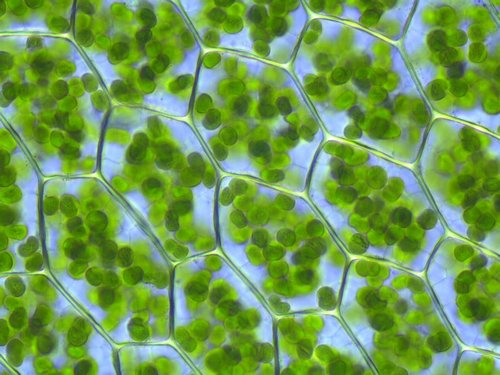
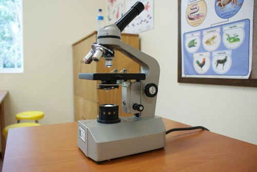

<div class="container lifeandliving"><div id="contents" class="col-md-12 main-content"><span  class="ch-nr-1"/>
        <div  class="section"><h1 class="title" id="toc-id-0">Selle as die basiese eenhede van lewe</h1><div class="teachers-guide">
<p><strong>Hoofstuk-oorsig</strong></p>

<p>2 weke</p>

<p>Hierdie hoofstuk stel leerders aan die sel bekend. Hulle mag reeds vantevore met die sel kennis gemaak het, maar ons gaan ook na die struktuur van selle kyk, insluitende die organelle wat kenmerkend van eukariotiese selle is. Ons gaan ook na die verskille tussen plant- en dierselle kyk. Daarna bestudeer ons die hi&#235;rargiese organisasie van selle om weefsels, organe en stelsels, en dan 'n organisme te vorm. Daar is ook inligting oor gespesialiseerde selle. Dit word as belangrik beskou om sodoende die idee tuis te bring dat biologiese struktuur aangepas is om 'n spesifieke funksie te verrig om  <em>funksionele doeltreffendheid</em> te verseker. Dit is belangrik dat leerders in Lewenswetenskappe die vaardigheid ontwikkel om te verduidelik en beskryf hoedat strukture aangepas is om hul funksie te verrig, veral indien hulle met die vak wil aangaan in Gr. 10-12.  Hierdie is dus 'n ideale geleentheid vir hulle om dit te begin oefen en om te besef dat daar '
n groot verskeidenheid van soorte, groottes en vorms van selle is, afhangende van hul funksie.</p>

<p/>

<p>Leerders moet ook 'n 3D model van 'n sel in hierdie hoofstuk maak. Die aktiwiteit kan as 'n projek beskou word. Ons stel voor dat die aktiwiteit aan die begin verduidelik word sodat die leerders daarvan bewus is en solank tuis kan begin dink wat hulle gaan gebruik om dit te maak, soos wat u deur die inhoud gaan en hulle van die sel leer. U kan dan 'n tydsgrens vir die model stel, byvoorbeeld, dit moet voltooi wees een week nadat die hoofstuk afgehandel is (dit is drie weke nadat u met die hoofstuk begin het).</p>

<p/>

<p><strong><u>BELANGRIKE NOTA</u></strong></p>

<p/>

<p>1.1 Selstruktuur (2.5 uur)</p>

<p/>
<table><tr><td><p><strong>Take</strong></p></td><td><p><strong>Vaardighede</strong></p></td><td><p><strong>Aanbeveling</strong></p></td></tr><tr><td><p>Aktiwiteit: Dinkskrum die Sewe Funksies van Lewe</p></td><td><p>Vaslegging van inligting, maak van lysies</p></td><td><p>Opsioneel</p></td></tr><tr><td><p>Aktiwiteit: Maak 'n opsomming van wat jy geleer het</p></td><td><p>Vaslegging van inligting, identifikasie, skryfvermo&#235;</p></td><td><p>Voorgestel</p></td></tr></table><p/>

<p>1.2 Verskille tussen plant- en dierselle (2 uur)</p>

<p/>
<table><tr><td><p><strong>Take</strong></p></td><td><p><strong>Vaardighede</strong></p></td><td><p><strong>Aanbeveling</strong></p></td></tr><tr><td><p>Aktiwiteit: Identifiseer verskille tussen plant- en dierselle</p></td><td><p>Vergelyking, identifikasie, beskrywing, skryfvermo&#235;</p></td><td><p>KABV voorgestel</p></td></tr><tr><td><p>Aktiwiteit: Vergelyk plant- en dierselle</p></td><td><p>Vergelyking, beskrywing</p></td><td><p>KABV voorgestel</p></td></tr><tr><td><p>Aktiwiteit: 3D model van Sel</p></td><td><p>Beplanning, identifikasie, beskrywing</p></td><td><p>KABV voorgestel</p></td></tr></table><p/>

<p>1.3 Selle in weefsels, organe en sisteme (1.5 uur)</p>

<p/>
<table><tr><td><p><strong>Take</strong></p></td><td><p><strong>Vaardighede</strong></p></td><td><p><strong>Aanbeveling</strong></p></td></tr><tr><td><p>Aktiwiteit: Evalueer mikroskopiese voorstellings</p></td><td><p>Ondersoeking, waarneming, vergelyking</p></td><td><p>KABV voorgestel</p></td></tr><tr><td><p>Aktiwiteit: Maak 'n nat preparaat van ui- en wangselle</p></td><td><p>Voorbereiding en ondersoek van monsters, waarneming, aanteken, beskryf</p></td><td><p>KABV voorgestel</p></td></tr><tr><td><p>Aktiwiteit: Doen navorsing oor die ontwikkeling van lig- en elektronmikroskope</p></td><td><p>Navorsing, skryfvermo&#235;</p></td><td><p>KABV voorgestel</p></td></tr></table><p/>
</div>
<p/>
<div class="note col-md-10" data-type="keyquestions"><ul data-class="ListBulleted"><li>Wat is selle?</li>
<li>Hoekom is selle so klein?</li>
<li>Wat beteken dit as iets mikroskopies is?</li>
<li>Is daar verskillende soorte selle?</li>
<li>Wat is binne-in 'n sel en waarom is dit daar?</li>
<li>Is plant- en dierselle eenders?</li>
</ul></div>
<p/>

<p>In hierdie hoofstuk leer ons van die basiese eenhede van lewe, wat al die funksies in lewende organismes se selle moontlik maak.</p>
<div class="section"><h2 class="title" id="toc-id-1">Selstruktuur</h2><div class="note col-md-6" data-type="newwords"><ul data-class="ListBulleted"><li>sel</li>
<li>sitoplasma</li>
<li>eukarioot</li>
<li>membraan</li>
<li>mikroskoop</li>
<li>mikroskopies</li>
<li>kern</li>
<li>organisme</li>
<li>prokarioot</li>
</ul></div>
<p/>
<div class="note col-md-6" data-type="didyouknow">
<p>Al die <strong><u>Nuwe woorde</u></strong> wat in die boksies in die kantlyn gelys is, word in die woordelys aan die einde van hierdie afdeling gedefinieer.</p>
</div>
<p/>
<div class="teachers-guide">
<p>Hierdie webwerf het vele interessante artikels in verband met wetenskap- en wetenskapverwante beroepe. Hulle is volgens onderwerpe geklassifiseer en verskaf ook wenke oor hoe om die artikels in u klaskamer te inkorporeer en watter vrae om te vra. Indien u daarin belangstel om die w&#234;reld daarbuite in u klaskamer in te bring, dan is hierdie &#233;&#233;n webwerf waarna u moet kyk by <a data-class="ExternalLink" href="http://bit.ly/13ZkfNQ">bit.ly/13ZkfNQ</a></p>
</div>
<p/>
<div class="note col-md-6" data-type="takenote">
<p>Jy sal dikwels in hierdie afdeling die voorvoegsel <em><strong>sito-</strong></em> sien, soos by sitoplasma, sitosol of sitoskelet. 
<strong>Sito-</strong> beteken sel, daarom, as jy sitoskelet lees, dan beteken dit in werklikheid: <em>sel-skelet </em>.</p>
</div><div class="section"><h3 class="title" id="toc-id-2">Wat is selle?</h3>
<p/>

<p>Alle lewende <strong>organismes</strong>, insluitende plante, diere, bakterie&#235; en fungi, is gemaak van <strong>selle</strong>. Selle is die kleinste funksionele deeltjies van alle lewende organismes.</p>

<p/>

<p>Wanneer ons al die lewende organismes in die w&#234;reld bestudeer, dan vind ons dat daar twee hoof soorte organismes is, gebasseer op die struktuur van hul selle. Die belangrikste verskil in struktuur is die teenwoordigheid van 'n  <strong>kern</strong>. Selle met 'n ware kern word geklassifiseer as <strong>eukariotiese</strong> selle, terwyl selle sonder 'n ware kern <strong>prokarioties</strong> selle is. In hierdie hoofstuk gaan ons spesifiek na eukariotiese selle kyk, wat organismes soos plante en diere insluit. Bakterie&#235; is voorbeelde van organismes met prokariotese selle.</p>

<p/>
<div class="teachers-guide">
<p>In Gr. 7 KABV is voorgestel dat leerders moet leer van die klassifikasie-stelsel van organismes in die 5 koninkryke, naamlik Bakterie&#235;, Protista, Fungi, Plante en Diere. Hierdie is 'n goeie geleentheid om leerders hieraan te herinner en te vra of hulle kan onthou wat die 5 koninkryke is.</p>
</div>
<p/>
<div class="note col-md-6" data-type="didyouknow">
<p>Ons noem die studie van selle <strong>Sitologie</strong> - sito- beteken sel en -logie beteken studie, terwyl -logis na die persoon wat daarin studeer verwys.</p>
</div>
<p/>
<div class="activity" data-type="Activity"><h1 class="title">Dinkskrum die Sewe Funksies van Lewe</h1>
<p/>

<p>Onthou jy die toets wat jy in vorige grade moes doen om te besluit of 'n organisme lewend of nie-lewend is? Dalk het jy 'n mnemoniek gebruik om die sewe prosesse te onthou, iets soos "SGVVBUG".</p>

<p/>
<div class="exercises"><div class="problemset"><div class="entry"><div class="problem">
<p>Werk in jou groep en kyk hoeveel van die sewe funksies van lewe julle kan onthou. Skryf hulle hieronder neer.</p><hr/><hr/><hr/><hr/><hr/><hr/><hr/></div><div class="solution">
<p/><p/>

          
<p>Beweging</p>

          
<p>Gaswisseling vir respirasie</p>

          
<p>Sensoriese waarneming</p>

          
<p>Groei</p>

          
<p>Voortplanting</p>

          
<p>Ekskresie/Uitskeiding</p>

          
<p>Voeding</p>

          
<p/>
</div></div><div class="entry"><div class="problem">
<p>Dink jy dat 'n enkele individuele sel lewend is? Verduidelik jou antwoord. </p><hr/><hr/></div><div class="solution">
<p/><p>Selle is die kleinste eenhede van lewe en daarom is hulle lewend.</p>
</div></div></div></div>
<div class="teachers-guide">
<p>Hierdie is 'n geleentheid vir leerders om hul mening te lug. Aangesien ons nog nie selle in detail bestudeer het nie, sal hulle dalk nog nie saamstem met die feit dat 'n individuele sel lewend is nie. Laat hulle toe om hul opinies te lug en dit te verdedig. U kan ook aan die einde van die hoofstuk  na hierdie vraag terugkom om te sien of hulle intussen van gedagte verander het.</p>
</div>
<p/>
</div>

<p/>

<p>Ons kan s&#234; dat selle die basiese <em>strukturele</em> en <em>funksionele</em> eenhede van alle lewende organismes is. 'n Mens kan nie individuele selle met die blote oog sien nie, want hulle is te klein - jy sal 'n <strong>mikroskoop</strong> moet gebruik om selle waar te neem. Ons s&#234; selle is 
<strong>mikroskopies</strong> omdat hulle net onder 'n mikroskoop gesien kan word.</p>

<p/>
<div class="note col-md-6" data-type="takenote">
<p>Ons gebruik die frase "met die blote oog" om te verduidelik dat ons na iets kyk deur slegs ons o&#235; te gebruik, sonder die hulp van 'n teleskoop of mikroskoop.</p>
</div>
<p/>
<figure><figcaption class="caption">Robert Hooke (1635 - 1702).</figcaption></figure><p/>

<p>Robert Hooke was in 1665 die eerste sitoloog wat selle onder sy mikroskoop kon identifiseer. Hy het besluit om die mikroskopiese vormpies wat hy in 'n skyfie kurk waargeneem het "<em>selle</em>" te noem, omdat die vormpies hom aan die selle (kamertjies) van die monnike in 'n klooster daar naby laat dink het.</p>

<p/>
<figure><figcaption class="caption">Robert Hooke was die eerste persoon om die term "selle" te gebruik toe hy dun skyfies kurk onder 'n mikroskoop bestudeer het. </figcaption></figure><p/>
<div class="note col-md-6" data-type="takenote">
<p>Die <strong><u>Besoek</u></strong>-boksies in die kantlyn bevat skakels na interessante webwerwe en videos. Tik eenvoudig die skakel presies netso in die adresbalkie van jou webleser in.</p>
</div>
<p/>
<div class="note col-md-6" data-type="visit">
<p>Probeer jouself indink hoe klein 'n sel is deur die volgende webwerf te besoek: <a data-class="ExternalLink" href="http://bit.ly/160sn3C">bit.ly/160sn3C</a></p>
</div>
<p/>
<div class="note col-md-6" data-type="takenote">
<p>Onthou die voorvoegsel "mikro-" beteken baie klein. Wanneer ons s&#234; dat iets mikroskopies is, beteken dit dat dit so klein is dat dit slegs onder 'n mikroskoop gesien kan word.</p>
</div>
<p/>
<figure><figcaption class="caption">Robert Hook se mikrosoop waarmee hy die eerste selle kon sien.</figcaption></figure></div><div class="section"><h3 class="title" id="toc-id-3">Verskillende soorte selle</h3><div class="note col-md-6" data-type="newwords"><ul data-class="ListBulleted"><li>koolstofdioksied</li>
<li>DNS</li>
<li>oorerflik</li>
<li>oorge&#235;rfde</li>
<li>medium</li>
<li>suurstof</li>
<li>gespesialiseerd</li>
<li>spesies</li>
<li>variasie</li>
</ul></div>
<p/>
<div class="teachers-guide">
<p>As 'n aanvangspunt vir hierdie afdeling mag u die volgende tipes vrae wil vra aan die begin van die les:  Dink julle alle selle is dieselfde? Indien hulle nie dieselfde is nie, kan julle aan redes dink waarom hulle verskil of hoe hulle kan verskil? Bespreek jul gedagtes hieroor met die klas.</p>
</div>
<p/>

<p>Jou liggaam word gemaak van baie verskillende soorte selle. Ons s&#234; jou selle is <strong>gespesialiseerd</strong> om 'n spesifieke funksie uit te voer. Afhangende van die funksie van die sel, kan dit spesialiseer deur 'n ander vorm of grootte aan te neem of deur komponente te bevat wat ander selle nie het nie. Kyk na die verskille tussen senuweeselle en rooibloedselle in die foto's.</p>

<p/>
<div class="teachers-guide">
<p>Vra u leerders om die verskille tussen die vorms van die senuweeselle en die rooibloedselle in die mikrograwe te beskryf. Let egter op dat die foto's agterna gekleur is, hierdie is nie die ware kleure van die selle nie, sodat leerders nie moet dink dat senuweeselle groen is nie, ens.</p>

<p/>

<p>As 'n uitbreiding, vra hulle hoe hulle dink die vorm van die selle met die funksie kan help. Om te beskryf hoe die struktuur van 'n besondere biologiese komponent geskik (aangepas) is vir sy funksie, (dit is <strong>funksionele geskiktheid</strong>), is 'n baie belangrike vaardigheid in Lewenswetenskappe en dit moet van vroeg af ontwikkel word. U kan 'n kort beskrywing van die funksie van die selle verskaf:</p>
<ul data-class="ListBulleted"><li>Senuwee\-selle gelei (versend) boodskappe deur die liggaam vanaf die brein om verskeie funksies te verrig. Daarom help die feit dat die senuweeselle verleng is (soos lang dun drade) en vertak is, dat hulle boodskappe oor lang afstande kan stuur en verbindings met baie ander selle kan maak.</li>
<li>Rooibloedselle dra suurstof vanaf die longe na die res van die liggaam. Hulle vorm is aangepas om suurstof te kan dra en maklik deur baie dun kapill&#234;res/haarbloedvate te kan gaan om by individuele selle uit te kom. Rooibloedselle het ook nie 'n kern nie sodat daar meer ruimte in die selle is vir die suurstof wat vervoer moet word.</li>
</ul></div>
<p/>
<figure><figcaption class="caption">Hierdie senuweeselle lyk groen onder 'n fluoressensie-mikroskoop.<a href="http://www.cellimagelibrary.org/images/10233"> http://www.cellimagelibrary.org/images/10233 </a></figcaption></figure><figure><figcaption class="caption">Rooibloedselle het 'n ronde, bikonkawe vorm.<a href="http://www.cellimagelibrary.org/images/18042"> http://www.cellimagelibrary.org/images/18042 </a></figcaption></figure><div class="note col-md-6" data-type="takenote">
<p>Bikonkaaf beteken uitgehol aan albei kante.</p>
</div>
<p/>

<p>Alhoewel daar baie verskillende soorte selle is, is daar komponente van die selstruktuur wat by alle selle gevind word. Daar is ook strukture wat die meeste, maar nie alle, selle het. Kom ons kyk hierna in die volgende afdeling.</p>

<p/>
<div class="teachers-guide">
<p>Onderwysers kan, as 'n inleiding tot die selorganelle aan die leerders een of twee van die YouTube liedjies aangetoon in die kantlyn wys. Dit verskaf 'n prettige intreepunt vir hierdie onderwerp.</p>
</div>
<p/>
<div class="note col-md-6" data-type="visit">
<p>Videos in verband met die sel en selorganelle. <a data-class="ExternalLink" href="http://bit.ly/14k3Q5S">bit.ly/14k3Q5S</a> en <a data-class="ExternalLink" href="http://bit.ly/19bsCKt">bit.ly/19bsCKt</a></p>
</div></div><div class="section"><h3 class="title" id="toc-id-4">Selstruktuur</h3><div class="note col-md-6" data-type="newwords"><ul data-class="ListBulleted"><li>selmembraan</li>
<li>respirasie</li>
<li>mitochondria</li>
<li>kernmembraan</li>
<li>nukleolus / kernliggaampie</li>
<li>organel</li>
<li>prote&#239;en</li>
<li>selektief deurlatend</li>
<li>vakuole</li>
</ul></div>
<p/>

<p>Soos wat ons vantevore genoem het, alle selle het sekere gemeenskaplike strukture. Dit is:</p>
<ul data-class="ListBulleted"><li>'n <strong>selmembraan</strong></li>
<li><strong>sitoplasma</strong>; en</li>
<li>in die meeste eukariotiese selle, 'n kern</li>
</ul><p/>

<p>Kom ons kyk nou na die struktuur van hierdie komponente van die sel, en na sommige van die ander organelle wat by die meeste selle aangetref word. 'n <strong>Organel</strong> is 'n gespesialiseerde struktuur in die sel wat 'n spesifieke funksie vir die sel verrig. Voorbeelde van organelle in selle is <strong>vakuole</strong> en <strong>mitochondria</strong>. Kyk na die diagram wat die verskillende komponente in 'n eenvoudige diersel illustreer.</p>

<p/>
<figure><figcaption class="caption">'n Diagram van 'n veralgemeende diersel</figcaption></figure><div class="section"><h4 class="title">Selmembrane</h4>
<p>Alle  selle word omring deur 'n selmembraan. Die selmembraan is 'n dun lagie wat die selinhoud omsluit en die sel van die omgewing skei.</p>

<p/>

<p>Baie verskillende stowwe moet in en uit die sel kan beweeg sodat die sel sy funksie kan verrig. Die selmembraan beheer watter stowwe toegelaat word om in te kom en uit te gaan. Ons s&#234; die selmembraan is <strong>Selektief deurlatend</strong>. Die organelle word ook deur membrane omring.</p>

<p/>
<div class="note col-md-6" data-type="takenote">
<p>Wanneer iets deurlatend is, beteken dit dat stowwe soos gasse en vloeistowwe vrylik daardeur kan beweeg.</p>
</div>
<p/>
<div class="teachers-guide">
<p>Om die begrip "selektief deurlatend" te verduidelik kan u die analogie van 'n veiligheidshek en -muur om iemand se huis gebruik - verduidelik dat slegs sekere mense toegang tot 'n private woning kan kry en dat die hek daar is om ongewenste persone toegang te weier. Afvalstowwe in die vorm van vuilgoedsakke word buite die grensmuur geplaas om verwyder te word, terwyl kos en water ingebring kan word. Virusse en ander siektes is soos diewe en kriminele wat nog steeds die huis kan binnedring en die inwoners/selorganelle kan aanval.</p>
</div></div><div class="section"><h4 class="title">Sitoplasma</h4><div class="note col-md-6" data-type="takenote">
<p>In Natuurwetenskappe praat ons van 'n <strong>medium</strong> wanneer ons praat van 'n oplossing waarin organelle, selle of organe gesuspendeer is. Kan jy aan 'n ander betekenis vir die woord "medium" dink?</p>
</div>
<p/>
<div class="teachers-guide">
<p>Daar word dikwels na die sitoplasma verwys as die jelie-agtige stof in selle. Dit is slegs gedeeltelik korrek aangesien die sitoplasme in werklikheid bestaan uit die jellie-agtige stof (genoem die sitosol)<strong>en</strong>  <u>al die sel-organelle</u> <strong>(behalwe die kern</strong>). Die term vir die sitoplasma (sitosol + organelle) en die kern (wat kernplasma bevat) gesamentlik is  <strong>protoplasma</strong>. U moet hiervan bewus wees wanneer u die sitoplasma aan leerders bekendstel sodat hierdie misverstand later in hul skoolloopbaan vermy kan kan word.</p>
</div>
<p/>
<div class="note col-md-6" data-type="didyouknow">
<p>Die sitoplasma (sitosol en organelle) en die kern word gesamentlik genoem  <strong>protoplasma</strong>.</p>
</div>
<p/>

<p>Die sitoplasma sluit alle lewende dele van die sel binne-in die selmembraan in, maar die kern word uitgesluit. Die sitoplasma bestaan uit die sitosol en die sel se organelle. Die sitosol is 'n waterige, jellie-agtige medium wat bestaan uit 70%-90% water, en is gewoonlik kleurloos.</p>

<p/>

<p>Die sitosol bestaan uit 'n mengsel van verskillende stowwe opgelos in water. Onthou jy nog wat 'n mengsel is, van Materie en Materiale? Hierdie stowwe in die sitosol sluit in soute, verskeie verbindings van elemente soos natrium en kalium, en meer komplekse molekules, soos  <strong>prote&#239;ene</strong>.</p>

<p/>

<p>Die sitosol is ook die plek waar baie chemiese reaksies plaasvind. Volgende kwartaal, in Materie en Materiale, sal ons meer oor chemiese reaksies leer.</p>

<p/>

<p>Die selorganelle wat deel is van die sitoplasma sluit in mitochondria, chloroplaste en vakuole. Vakuole is organelle wat deur 'n membraan omsluit word en wat meestal water met ander molekules in oplossing bevat. Die grootte en aantal vakuole in 'n sel varieer baie en hang af van die tipe sel en die funksie daarvan.</p>

<p/>
<figure><figcaption class="caption">Hierdie is 'n mikrograaf van 'n plantsel. Kan jy die helder, wit organelle sien? Dit is die vakuole. Die sitoplasma lyk baie korrelagtig in hierdie voorbeeld.</figcaption></figure><p/>
<div class="teachers-guide">
<p>Daar is verskeie vakuole in hierdie voorbeeld van 'n plantsel. Dit is die geval met baie plantselle. Die kern, met sy donker nukleolus, is ook baie duidelik. U kan later na hierdie voorbeeld terugkom om weer na die kern te kyk. Indien die leerders vra wat die grys-wit struktuur bo links is, dit is 'n styselkorrel. Plantselle stoor styselkorrels in die sitoplasma. U kan die leerders byskrifte laat maak vir die vakuole en sitoplasma in hierdie voorbeeld. Die selwand van die plantsel is ook sigbaar - die selmembraan is die binneste, meer gevoude gedeelte, terwyl die selwand die liggrys, meer rigiede struktuur aan die buitekant is. Daar is verskeie mitochondria dofweg sigbaar, byvoorbeeld die grys ovaal strukture onder links. Sodra u hierdie strukture behandel het, kan u hierna terugkom om die ander byskrifte by te voeg.</p>
<figure><figcaption class="caption">'n Mikrograaf met byskrifte van 'n eensellige plant</figcaption></figure></div></div><div class="section"><h4 class="title">Kern</h4>
<p>Beide plant- en dierselle het 'n <strong>kern</strong> in die sitoplasma. Dit beheer al die prosesse en chemiese reaksies wat in die sel plaasvind. Die kern bevat ook die kern se genetiese materiaal wat as lang <strong>DNS</strong>-molekules bestaan.</p>

<p/>
<div class="note col-md-6" data-type="takenote">
<p>Die verskil tussen eukariotese en prokariotiese selle is dat eukariotiese selle 'n kern het waar die genetiese materiaal deur 'n membraan omring word. Prokariotiese selle se DNS dryf in die sitoplasma rond sonder 'n membraan.</p>
</div>
<p/>

<p>Die kern bestaan uit die volgende:</p>
<ul data-class="ListBulleted"><li>'n Dubbele membraan genoem die  <strong>kernmembraan</strong> omsluit die DNS. Die kernmembraan het porie&#235; (gaatjies) waardeur stowwe kan beweeg.</li>
<li>Daar is 'n <strong>nukleolus / kernliggaampie</strong> in die kern. Dit word waargeneem as 'n donkerder gebied in die kern.</li>
<li>Die DNS bevat inligting in verband met  <strong>oorge&#235;rfde</strong> eienskappe (<strong>oorerflik</strong>), soos of die persoon blou, bruin of groen o&#235; sal h&#234;.</li>
</ul><p/>

<p>Bestudeer die diagram en die mikrograaf van 'n kern.</p>

<p/>
<div class="teachers-guide">
<p>Om 'n mikrograaf te bestudeer is 'n baie belangrike vaardigheid om aan te leer vir later in Lewenswetenskappe. Leerders word dikwels aan skematiese diagramme van selle blootgestel, wat 'n ge&#239;dealiseerde beeld van die sel gee. Hulle vind dit dan moeilik om hierdie strukture in 'n mikrograaf van 'n werklike sel te identifiseer. Moedig u leerders aan om op te let hoe hierdie diagram vanaf die mikrograaf geteken is en hoe dit verskil van die werklike mikrograaf van die kern. Herinner u leerders daaraan dat 'n mikrograaf 'n foto is wat deur 'n mikroskoop geneem is, in hierdie geval met 'n transmissie-elektronmikroskoop.</p>
</div>
<p/>
<figure><figcaption class="caption">Links) 'n Diagram van 'n kern. Regs) 'n Mikrograaf van 'n selkern.</figcaption></figure><p/>
<div class="note col-md-6" data-type="didyouknow">
<p>Navorsers het begin om DNS-molekules te gebruik om data te stoor. Wetenskaplikes van Harvard het dit in 2012 reggekry om 5.5 petabits (ongeveer 700 terabytes) data op 1 g DNS te stoor! "DNS USB harde skywe" is nog nie beskikbaar nie, maar dit sal dalk nog in jou leeftyd moontlik wees!</p>
</div>
<p/>

<p>DNS is 'n baie belangrike deel van alle selle en daarom ook van alle lewe. DNS bevat inligting wat al jou oorerflike eienskape enkodeer. Dit verwys na eienskappe wat in families oorge&#235;rf word, byvoorbeeld jou vel- en oogkleur, of jy allergie&#235; kan ontwikkel, en ook die waarskynlikheid om sekere soorte siektes op te doen.</p>

<p/>
<div class="note col-md-6" data-type="didyouknow">
<p>Identiese tweelinge kom van dieselfde bevrugte eiersel wat in twee deel en het dan dieselfde DNS. Maar, hulle is nie <em>presies</em> dieselfde nie as gevolg van omgewingsfaktore wat hul ontwikkeling kan be&#239;nvloed. Nie-identiese tweelinge ontwikkel uit twee verskillende eierselle en twee verskillende spermselle.</p>
</div>
<p/>

<p>Elke organisme se DNS is uniek. Die verskille in die DNS tussen individue word <strong>variasie</strong> genoem. Selfs die kleinste verskil in DNS kan groot variasies in <strong>spesies</strong> en tussen spesies veroorsaak. Binne spesies kan DNS-verskille of -variasies lei tot albino-diere of die oordrag van dieselfde siektes, soos sekelsel-anemie.</p>

<p/>
<div class="note col-md-6" data-type="didyouknow">
<p>Gebasseer op die werk van baie genetiese navorsers, kan ons nou s&#234; dat alle mense 99.9% identiese DNS deel. Die verskille in die 0.1% wat oorbly, is verantwoordelik vir al die verskille wat ons by mense waarneem.</p>
</div>
<p/>
<figure><figcaption class="caption">'n Albino (wit) leeu het 'n tekort aan pigment as gevolg van 'n verandering in die leeu se DNS.</figcaption></figure><p/>
<div class="note col-md-6" data-type="visit">
<p>Leer meer oor gene <a data-class="ExternalLink" href="http://bit.ly/1bmf0wO">bit.ly/1bmf0wO</a></p>
</div></div><div class="section"><h4 class="title">Mitochondria</h4>
<p/>

<p>Onthou jy dat ons oor voedsel as die energiebron van ons liggame gepraat het? Net soos wat hout gebrand word om die gestoorde potensi&#235;le energie daarin te gebruik om 'n vuur te maak om water te verhit, net so word die voedsel wat ons eet afgebreek om energie vry te stel sodat ons liggame kan funksioneer. <strong>Mitochondria</strong> is hiervoor verantwoordelik.</p>

<p/>
<div class="teachers-guide">
<p>U kan hierdie geleentheid gebruik om die betekenis van gestoorde potensi&#235;le energie te hersien, sowel as die feit dat voedsel as brandstof vir ons liggame beskou word.</p>
</div><figure><figcaption class="caption">Diagram van 'n mitochondrion.</figcaption></figure><p/>
<div class="note col-md-6" data-type="takenote">
<p>Enkelvoud of meervoud? Mitochondr<em><u>ion</u></em> is die enkelvoud en mitochondr<em><u>ia</u></em> is die meervoud van die woord.</p>
</div>
<p/>

<p>Mitochondria is organelle wat deur 'n dubbele membraan omsluit word. Selle wat baie aktief is sal tipies meer mitochondria h&#234; as selle wat minder aktief is. Watter tipe sel dink jy sal meer mitochondria h&#234;: 'n spiersel of 'n beensel?</p>

<p/>
<div class="teachers-guide">
<p>'n Spiersel sal meer mitochondria h&#234; aangesien spiersele groot hoeveelhede energie vir beweging benodig. U kan dit illustreer met die volgende illustrasie van die hartspierweefsel van 'n muis. Hartspier-weefsel is baie aktief en benodig baie energie, daarom die groot aantal mitochondria in die weefsel, soos hieronder gesien kan word.</p>
</div>
<p/>
<figure><figcaption class="caption">'n Mikrograaf van spierweefsel van 'n muis. Kan jy al die donkerder grys ovale sien? Dit is die mitochondria.</figcaption></figure><p/>

<p>Sodra voedselmolekules die selle binnegaan en deur die mitochondria opgeneem is, word dit deur die mitochondria gebruik tydens 'n proses wat  <strong>respirasie</strong> genoem word. Gedurende respirasie kan die mitochondrion die molekules voedsel kombineer met <strong>suurstof</strong> om energie vry te stel wat die sel kan gebruik. <strong>Koolstofdioksied</strong>, water en afvalstowwe is neweprodukte van hierdie proses.</p>

<p/>
<div class="note col-md-6" data-type="didyouknow">
<p>Mitochondria het hule eie <em>mitochondriale DNS</em> wat heeltemal van die DNS in die kern verskil. Wat kan ons van hierdie feit aflei?</p>
</div>
<p/>
<div class="teachers-guide">
<p>Met verwysing na die "het jy geweet"-boksie in die kantlyn in verband met mitochondriale DNS kan leerders dalk vra wat ons kan aflei van die feit dat daar so-iets is. Een teorie is dat mitochondria ontstaan het uit bakterie&#235; wat oeroue eukariotiese selle binnegedring, in 'n simbiotiese verhouding met die gasheersel begin saamleef het, en uiteindelik hul vermo&#235; om onafhanklik te leef verloor het. Die idee is nog steeds baie kontroversieel en word nie algemeen aanvaar nie. MtDNS het blykbaar 'n invloed op geen-uitdrukking en kan gebruik word om moederlike verwantskap na te spoor, aangesien al ons mtDNS van ons moeders afkomstig is, nie van ons vaders nie.</p>
</div>
<p/>
<figure><figcaption class="caption">Mikrograaf van 'n mitochondrion in 'n sel.</figcaption></figure><p/>

<p>Kyk na die mikrograaf van die mitochondrion in die voorbeeld. Watter verskille kan jy sien tussen hierdie mitochondrion en die diagram wat voorheen gegee is? In die diagram kan duidelik gesien word dat die binneste membraan gevou is, terwyl dit nie so duidelik sigbaar in die mikrograaf is nie. Dit is as gevolg van die manier waarop die sel voorberei (gesny) is voordat dit onder die transmissie elektronmikroskoop bekyk is. In die diagram word 'n ge&#239;dealiseerde voorstelling van die organel gemaak. Wanneer ons dit egter onder 'n mikroskoop bekyk kan dit heeltemal anders lyk, afhangende van hoe dit gesny is om 'n baie dun snit te kry om na te kyk.</p>

<p/>
<div class="note col-md-6" data-type="visit">
<p>As jy meer wil uitvind oor hoe mitochondriale DNS (mtDNS) vir "ouderdom" verantwoordelik is, lees hierdie artikel deur Dr Barry Star van Stanford Universiteit <a data-class="ExternalLink" href="http://bit.ly/164z730">bit.ly/164z730</a></p>
</div>
<p/>
<div class="activity" data-type="Activity"><h1 class="title">Maak 'n opsomming van wat jy geleer het</h1>
<p/>

<p>Noudat jy die inwendige struktuur van 'n sel bestudeer het, kom ons maak 'n opsomming van wat jy sover geleer het. Voltooi hierdie tabel deur die belangrikste funksie van elk van die selstrukture in te vul.</p>

<p/>
<table><tr><td><p><strong>Selstruktuur</strong></p></td><td><p><strong>Funksie(s)</strong></p></td></tr><tr><td><p>Selmembraan</p></td><td><p/></td></tr><tr><td><p>Sitoplasma</p></td><td><p/></td></tr><tr><td><p>Kern</p></td><td><p/></td></tr><tr><td><p>Mitochondrion</p></td><td><p/></td></tr><tr><td><p>Vakuool</p></td><td><p/></td></tr></table><p/>
<div class="teachers-guide">
<p/>
<table><tr><td><p><strong>Selstruktuur</strong></p></td><td><p><strong>Funksie(s)</strong></p></td></tr><tr><td><p>Selmembraan</p></td><td><p>reguleer / beheer beweging van stowwe in en uit die sel</p></td></tr><tr><td><p>Sitoplasma</p></td><td><p>waar baie van die chemiese reaksies en prosesse in die sel plaasvind</p></td></tr><tr><td><p>Kern</p></td><td><p>bevat DNS (oorerflike materiaal) van die sel en beheer die sel se aktiwiteite</p></td></tr><tr><td><p>Mitochondrion</p></td><td><p>stel energie uit voedsel vry vir die sel</p></td></tr><tr><td><p>Vakuool</p></td><td><p>stoor stowwe, water en voedingstowwe</p></td></tr></table><p/>
</div>
<p/>
</div>

<p/></div></div></div><div class="section"><h2 class="title" id="toc-id-5">Verskille tussen plant- en dierselle</h2><div class="note col-md-6" data-type="newwords"><ul data-class="ListBulleted"><li>selwand</li>
<li>sellulose</li>
<li>chloroplast</li>
<li>turgied</li>
<li>flaksied</li>
</ul></div>
<p/>

<p>Noudat ons die ooreenkomste tussen plant- en dierselle ken, kom ons kyk hoe hulle verskil.</p>

<p/>

<p><em>
            <strong>Plantselle verskil van dierselle</strong>
          </em></p>

<p/>

<p>Waarom verskil plant- en dierselle? Plant- en dierselle verskil omdat hulle verskillende funksies moet verrig.</p>

<p/>
<div class="activity" data-type="Activity"><h1 class="title">Identifiseer verskille tussen plant- en dierselle</h1>
<p/>
<ol data-class="ListEnumerated"><li>Bestudeer die illustrasies hieronder. Links is 'n prentjie van plantselle en regs is 'n prentjie van dierselle, wat blou gekleur is.</li>
<li>
<p>Skryf die verskille wat jy kan waarneem in die tabel onder die prente van die selle.</p>

        <table class="too-large"><tr><td><p><strong>Plantselle</strong></p></td><td><p><strong>Dierselle</strong></p></td></tr><tr><td><figure id="gd-idp2382736"></figure><p><a data-class="ExternalLink" href="http://commons.wikimedia.org/wiki/File:Plagiomnium_affine_laminazellen.jpeg">http://commons.wikimedia.org/wiki/File:Plagiomnium_affine_laminazellen.jpeg</a></p></td><td><figure id="gd-idm302208"></figure><p><a data-class="ExternalLink" href="http://www.flickr.com/photos/codonaug/6936088946/">http://www.flickr.com/photos/codonaug/6936088946/</a></p></td></tr><tr><td><p/>

                  
<p/></td><td><p/>

                  
<p/>

                  
<p/>

                  
<p/>

                  
<p/></td></tr></table></li>
</ol><div class="teachers-guide">
<p/>
<table><tr><td><p><strong>Plantselle</strong></p></td><td><p><strong>Dierselle</strong></p></td></tr><tr><td><figure id="gd-idp3250688"></figure><p><a data-class="ExternalLink" href="http://commons.wikimedia.org/wiki/File:Plagiomnium_affine_laminazellen.jpeg">http://commons.wikimedia.org/wiki/File:Plagiomnium_affine_laminazellen.jpeg</a></p></td><td><figure id="gd-idp3926160"></figure><p><a data-class="ExternalLink" href="http://www.flickr.com/photos/codonaug/6936088946/">http://www.flickr.com/photos/codonaug/6936088946/</a></p></td></tr><tr><td><p/>

                  <ul data-class="ListBulleted"><li>Plantselle het 'n re&#235;lmatige vorm en struktuur en behou maklik hul vorm</li>
<li>'n Dik buitenste laag (twee "lae" omring die sel alhoewel dit nie baie duidelik in hierdie voorbeeld is nie)</li>
<li>Groen chloroplaste vir fotosintese</li>
</ul></td><td><p/>

                  <ul data-class="ListBulleted"><li>Die selle se vorm en struktuur is onre&#235;lmatig en hulle kan maklik buig en vervorm word</li>
<li>Dun buitenste laag (slegs 'n selmembraan omsluit die sel)</li>
<li>Geen chloroplaste word waargeneem nie</li>
</ul></td></tr></table><p/>
</div>
<p/>
</div>
<div class="section"><h3 class="title" id="toc-id-6">Selwand</h3>
<p>Alle dier- en plantselle word deur 'n selmembraan omsluit, soos wat ons vantevore geleer het. Soos wat jy egter met die vorige aktiwiteit opgemerk het, dierselle het dikwels 'n onre&#235;lmatige vorm, terwyl plantselle 'n meer re&#235;lmatige, rigiede vorm het.</p>

<p/>

<p>Plantselle het 'n addisionele laag wat die sel aan die buitekant van die selmembraan omring. Dit word die  <strong>selwand</strong> genoem. Die selwand verskaf 'n beskermende raamwerk vir ondersteuning en stabiliteit aan die plantsel.</p>

<p/>

<p>Die selwand word gevorm van 'n verskeidenheid verbindings, waarvan <strong>sellulose</strong> die belangrikste is. Sellulose help om die vorm van die plantsel te behou. Dit laat die plant toe om stewig en regop te bly, selfs as dit baie hoog groei.</p>

<p/>
<div class="note col-md-6" data-type="didyouknow">
<p>Daar is ander organismes was ook selwande het, maar by hierdie organismes is die selwand nie dieselfde as by plantselle nie. Slegs die selwand van plantselle bestaan uit sellulose.</p>
</div></div><div class="section"><h3 class="title" id="toc-id-7">Chloroplaste</h3>
<p/>

<p>Jy mag dalk onthou dat jy in vorige grade van fotosintese geleer het. Kan jy nog onthou waarom fotosintese so belangrik vir alle lewe op aarde is?</p>
<div class="teachers-guide">
<p>Gebruik hierdie geleentheid om die leerders aan fotosintese te herinner en die feit dat voedselkettings altyd by groen plante, die produseerders, begin. U kan selfs die woord-vergelyking op die bord skryf: sonlig + koolstofdioksied + water \(\rightarrow{}\)  glukose + suurstof</p>
</div>
<p/>

<p>Het jy die groen organelle in die plantselle opgelet. Hulle was afwesig in die dierselle in die vorige aktiwiteit. Hierdie is <strong>chloroplaste</strong>. Chloroplaste is die enigste organelle wat voedsel kan produseer met behulp van sonligenergie. Slegs plante met chloroplaste is in staat om te fotosinteer omdat hulle die baie belangrike pigment  <strong>chlorofil</strong> bevat. Chlorofil kan die stralingsenergie van die son absorbeer en dit dan verander na chemiese energie, wat plante en diere kan gebruik. Dierselle het nie chlorofil nie en kan daarom nie fotosinteer nie.</p>

<p/>
<figure><figcaption class="caption">Daar is 'n groot chloroplast sigbaar langs die selwand in hierdie snit van 'n sel.<a href="http://commons.wikimedia.org/wiki/File:Chloroplast_in_leaf_of_Anemone_sp_TEM_12000x.png"> http://commons.wikimedia.org/wiki/File:Chloroplast_in_leaf_of_Anemone_sp_TEM_12000x.png </a></figcaption></figure><div class="teachers-guide">
<p>Leerders hoef nie die inwendige struktuur van die chloroplast te ken nie, maar hierdie mikrograaf toon dit baie duidelik. Daarom kan u die stapels tilako&#239;ed-skywe, genoem 'n granum (donker dik strepe), verbind deur die lamellae (dunner grys strepies tussen die stapels) gerus uitwys. Die chlorofil-pigment is in die tilako&#239;ed-skywe ingebed.</p>
</div>
<p/>
<div class="note col-md-6" data-type="didyouknow">
<p>Die seeslak, <em>Elysia chlorotica,</em> het ontwikkel om die chloroplaste van 'n alg wat hy eet op te neem en in sy eie selle te inkorporeer waar die chloroplaste funksioneer asof in 'n plant!</p>
</div>
<p/>
<div class="note col-md-6" data-type="visit">
<p>Artikel en video oor die sonkrag seeslak, <em>Elysia chlorotica.</em><a data-class="ExternalLink" href="http://bit.ly/17GrwmS">bit.ly/17GrwmS</a></p>
</div></div><div class="section"><h3 class="title" id="toc-id-8">Vakuole</h3>
<p>Het 'n plant 'n skelet? Draai na 'n maat en bespreek wat plantselle moontlik as 'n skelet kan gebruik. Dink byvoorbeeld aan 'n grashalmpie of 'n roos met 'n lang steel.</p>
<div class="teachers-guide">
<p>Plantselle het selwande wat ondersteuning verskaf en sommige leerders mag die vakuole onthou.</p>
</div>
<p/>

<p><strong>Vakuole</strong> in plantselle is gewoonlik redelike groot organelle wat soveel as  90% van die sel se volume kan beslaan. Die vloeistof in die vakuool, genoem selsap, help die plant ondersteun. Die gevulde vakuole druk teen die selwand en maak so die selle, en daarom die plant, stewig. Ons s&#234; die selle is <strong>turgied</strong> in hierdie toestand. Die teenoorgestelde van turgied is <strong>flaksied</strong>.</p>

<p/>
<figure><figcaption class="caption">Links) 'n Plant met turgiede vakuole is stewig en staan regop. Regs) 'n Plant met flaksiede vakuole hang slap (genoem verwelking).</figcaption></figure><p/>

<p>'n Mens kan maklik sien wanneer 'n plant se vakuole vol is en wanneer nie. Wanneer die vakuole van 'n plant vol is word die plant se stingels en blare regop en stewig gehou. Maar, indien die blare en stingels slap hang, het die vakuole waarskynlik baie water verloor omdat die grond te droog was en die sel verplig was om die water daarin te gebruik om te oorleef.</p>

<p/>

<p>Vakuole is net in sommige dierselle teenwoordig en dan is hulle gewoonlik baie klein en tydelik.</p>

<p/>
<div class="activity" data-type="Activity"><h1 class="title">Vergelyk plant- en dierselle</h1>
<p/>
<ol data-class="ListEnumerated"><li>Bestudeer die twee diagramme van plant- en dierselle hieronder. <ol data-class="ListEnumerated"><li>Stel 'n tabel op van die verskille tussen die twee tipes selle in die ruimte daarvoor voorsien. Gee jou tabel 'n toepaslike opskrif.</li>
<li>Verskaf ook byskrifte vir die verskillende selstrukture en organelle</li>
</ol></li>
</ol><figure><figcaption class="caption">'n Tipiese diersel</figcaption></figure><figure><figcaption class="caption">'n Tipiese plantsel</figcaption></figure><div class="teachers-guide">
<p>Hier is die byskrifte vir die plant- en dierseldiagramme.</p>
<figure id="gd-idm3000496"></figure><p>'n Tipiese diersel</p>

<p/>
<figure id="gd-idm2997856"></figure><p>'n Tipiese plantsel</p>
</div><div class="exercises"><div class="problemset"><div class="entry"><div class="problem">
<p><br/><br/><br/><br/><br/><br/><br/><br/><br/><br/></p>

          <div class="teachers-guide">
<p>'m Voorbeeld van die tipe tabel wat leerders mag produseer word hieronder verskaf. Leerders mag die inligting op 'n ander manier gee met 'n ander uitleg, wat aangemoedig behoort te word, solank dit logies en verstaanbaar is. As voorbeeld: hulle mag dalk nie die eerste kolom met die eienskap h&#234; nie.</p>
</div>
</div><div class="solution">
<p/><p/>

          
<p>Tabel wat die verskille tussen plant- en dierselle opsom</p>

          
<p/>

          <table><tr><td><p><strong>Eienskap</strong></p></td><td><p><strong>Dierselle</strong></p></td><td><p><strong>Plantselle</strong></p></td></tr><tr><td><p>Vorm</p></td><td><p>Het 'n onre&#235;lmatige vorm</p></td><td><p>Het 'n rigiede re&#235;lmatige vorm</p></td></tr><tr><td><p>Selwand</p></td><td><p>Besit slegs 'n selmembraan, nie 'n selwand nie</p></td><td><p>Besit beide 'n selmembraan en 'n selwand</p></td></tr><tr><td><p>Vakuole</p></td><td><p>Besit klein vakuole wat tydelik of afwesig kan wees</p></td><td><p>Het groot vakuole</p></td></tr><tr><td><p>Chloroplaste</p></td><td><p>Het geen chloroplaste</p></td><td><p>Het chloroplaste vir fotosintese</p></td></tr></table><p/>
</div></div></div></div>

<p/>
</div>

<p/>
<div class="activity" data-type="Activity"><h1 class="title">3D model van 'n sel</h1><div class="note col-md-6" data-type="takenote">
<p>Ons gebruik heeltyd modelle in wetenskap, of dit nou fisies geboude modelle van materiale, 'n wiskundige model, of selfs rekenaar-modelle is. 'n Model is 'n voorstelling van 'n werklike voorwerp of stelsel om ons te help om dit te verstaan.</p>
</div>
<p/>

<p>Vir 'n 3D model van die sel gaan ons modelle van materiale bou, waar ons ander voorwerpe gebruik om die werklike dele van die sel voor te stel.</p>

<p/>

<p><strong>INSTRUKSIES:</strong></p>
<ol data-class="ListEnumerated"><li>Jy moet 'n 3D model van 'n sel bou.</li>
<li>Jy mag enige materiaal of "media" kies om jou sel te skep</li>
<li>Jou model moet duidelik die volgende toon:  <ul data-class="ListBulleted"><li>selmembraan</li>
<li>kern met kernmembraan</li>
<li>sitoplasma</li>
<li>mitochondria</li>
<li>vakuole</li>
<li>chloroplaste</li>
<li>enige ander organelle waarvan jy mag geleer het</li>
</ul></li>
</ol><p/>
<div class="teachers-guide">
<p>Hierdie aktiwiteit kan as 'n projek gebruik word. Moedig leerders aan om kreatief te wees met hierdie taak. Hulle kan sel-pizzas maak (met verskillende voorwerpe as bolaag om die organelle te verteenwoordig), seljellies maak (met verskillende vrugte wat organelle voorstel), of hulle mag herwinnings-items gebruik om die verskillende funksies van die organelle voor te stel (soos batterye wat die mitochondria voorstel). Die moontlikhede is eindeloos.</p>

<p>'n Alternatiewe opsie is dat leerders selmodelle van speelklei maak. Verskillende kleure klei kan met voedselkleurstof gemaak word. Die resep vir speelklei is soos volg:</p>
<ul data-class="ListBulleted"><li>1 koppie wit meelblom</li>
<li>1/2 koppie sout</li>
<li>2 eetlepels kremetart (opsioneel)</li>
<li>1 e kookolie</li>
<li>voedselkleurstof</li>
<li>1 k kookwater</li>
</ul><p/>
<ol data-class="ListEnumerated"><li>Voeg al die bestanddele in 'n groot mengbak bymekaar en meng totdat dit bind en moeilik begin meng.</li>
<li>Neem dit uit die mengbak en gooi dit op 'n plank (of ander oppervlak vir hierdie doel). (Dit sal warm wees as jy dit uit die bak haal, so wees versigtig.)</li>
<li>Knie die deeg totdat dit soos speelklei voel en lyk.</li>
<li>Voeg die voedselkleurstof by om die kleur van jou keuse te verkry.</li>
<li>Hou die speelklei in 'n lugdigte houer in die yskas tot jy dit gebruik.</li>
</ol><p/>
</div>
<p/>

<p><strong>Vereistes vir jou model</strong>:</p>
<ul data-class="ListBulleted"><li>Jou model en die uitbeeldings van die organelle moet naastenby lyk soos die werklike organelle waarvan jy sover geleer het.</li>
<li>Jou model moet duidelik gemerk word met 'n opskrif en jou naam.</li>
<li>Elke organel moet duidelik aangetoon word en by elke byskrif moet 'n beskrywing van die funksie van daardie betrokke organel wees.</li>
<li>Jy  moet ook 'n meegaande tekening maak (ten minste die grootte van 'n A4 papier) insluitende die byskrifte van die struktuur van 'n basiese plant- en diersel.</li>
<li>Jou onderwyser sal die model volgens 'n rubriek assesseer.</li>
</ul><p/>
<div class="teachers-guide">
<p>Alhoewel daar 'n algemene assesserings-rubriek vir modelle in die Bylae van die Onderwysersgids is, verskaf ons hier 'n meer gedetailleerde rubriek wat u kan gebruik om u leerders se modelle uit 40 punte te assesseer. U kan die rubriek fotokopi&#235;er indien u dit aan die leerders wil gee sodat hulle weet waarvoor hulle geassesseer gaan word.</p>

<p>TOTAAL [40 punte]</p>

<p/>
</div>
<p/>
</div></div></div><div class="section"><h2 class="title" id="toc-id-9">Selle in weefsels, organe en stelsels</h2>
<p/>
<div class="note col-md-6" data-type="newwords"><ul data-class="ListBulleted"><li>meersellige organismes</li>
<li>dekglasie</li>
<li>voorwerpglasie</li>
<li>monster</li>
<li>eensellig</li>
<li>nat preparaat</li>
</ul></div>
<p/>

<p>Noudat jy geleer het van verskillende selle, is jy gereed om hulle self waar te neem?</p>
<div class="section"><h3 class="title" id="toc-id-10">Waarneming van selle onder 'n mikroskoop</h3><div class="teachers-guide">
<p>Hierdie afdeling van mikroskopie is bedoel as 'n inleiding aangesien leerders later in die hoofstuk met mikroskope moet kan werk, asook wanneer hulle met Lewenswetenskappe in Gr. 10 wil aangaan. Om te leer hoe om met 'n instrument te werk is 'n baie goeie vaardigheid. In Gr. 10 Lewenswetenskappe sal leerders in meer detail van verskillende tipes mikroskope leer. Hier word slegs kortliks na lig- en elektronmikroskope verwys.</p>
</div>
<p>Het jy al ooit vantevore 'n mikroskoop gebruik? Mikroskope is instrumente wat gebruik word om na voorwerpe te kyk wat te klein is om met die blote oog waar te neem. Sedert die dae van Hooke se waarnemings het die ontwikkeling van mikroskope 'n lang pad geloop. Ons het vandag ongelooflik kragtige mikroskope, genoem elektronmikroskope, wat elektrone in plaas van lig gebruik om baie klein detail waar te neem - selfs so klein as 'n enkele kolom atome.</p>
<figure><figcaption class="caption">'n Moderne elektronmikroskoop<a href="http://commons.wikimedia.org/wiki/File:Transmission_electron_microscope_%28Morgagni_268D%29_pl.jpg"> http://commons.wikimedia.org/wiki/File:Transmission_electron_microscope_%28Morgagni_268D%29_pl.jpg </a></figcaption></figure><p/>
<div class="teachers-guide">
<p>Leerders het reeds kennis gemaak met die atoom in Gr 8 Materie en Materiale en dalk al voorheen. Die atoom is die bousteen van alle materie. Die vermo&#235; om kolomme atome onder 'n transmissie-elektronmikroskoop waar te neem dui daarop hoe ontsettend kragtig met ho&#235; resolusie hierdie instrumente is. 'n Nuttige webwerf vir inligting oor mikroskopie: <a data-class="ExternalLink" href="http://bit.ly/13ZkGaV">bit.ly/13ZkGaV</a></p>

<p/>
</div>
<p/>
<div class="note col-md-6" data-type="visit">
<p>Burger-wetenskap: Help met kankernavorsing vanuit jou eie huis! <a data-class="ExternalLink" href="http://bit.ly/16DCU45">bit.ly/16DCU45</a></p>
</div>
<p/>
<div class="teachers-guide">
<p>Indien mikroskope nie in jou skool beskikbaar is nie, probeer om met die leerders se hulp self een te bou! As Robert Hooke dit kon doen sonder die wonderlike tegnologiese wonders van ons tyd, dan kan ons ook! <a data-class="ExternalLink" href="http://bit.ly/19bsOcQ">bit.ly/19bsOcQ</a> of <a data-class="ExternalLink" href="http://bit.ly/16IIkfZ">bit.ly/16IIkfZ</a></p>

<p>Alternatiewelik, organiseer 'n besoek aan 'n skool waar mikroskope beskikbaar is en werk saam met die leerders van daardie skool, of organiseer 'n tyd wanneer u skool se leerders die toerusting kan gebruik wanneer die laboratorium nie in gebruik is nie.</p>
</div>
<p/>

<p>Voordat ons met mikroskope kan begin werk, kom ons kyk eers na die verskillende dele van 'n basiese ligmikroskoop en die veiligheids-voorsorgmaatre&#235;ls wat ons moet tref voor ons hierdie dele van die toerusting gebruik.</p>
<figure><figcaption class="caption">'n Basiese ligmikroskoop</figcaption></figure><p/>

<p>'n Mikroskoop laat jou toe om detail van monsters te sien wat jy nie met die blote oog kan sien nie. Die beeld wat jy sien moet wees:</p>
<ul data-class="ListBulleted"><li>goed genoeg belig met genoeg lig om die monster te kan sien</li>
<li>goed gefokus</li>
<li>in kontras met die omgewing om detail duidelik waar te neem</li>
</ul><p/>

<p>Die volgende illustrasie verduidelik die verskillende dele van 'n ligmikroskoop en waarvoor elkeen gebruik word</p>
<figure id="gd-idm2339712"></figure><p/>

<p>Wanneer jy 'n mikroskoop gebruik, maak seker dat jy die volgende veiligheids-voorsorgmaatre&#235;ls tref:</p>

<p/>
<ol data-class="ListEnumerated"><li>Daar is 'n spesiale manier hoe mikroskope gedra word: een hand ondersteun die basis en die ander hand hou die raamwerk van die mikroskoop vas.</li>
<li>Plaas dit op 'n stabiele, horisontale, skoon werksbank.</li>
<li>Voordat jy begin om die mikroskoop te gebruik, maak die lense met regte lenspapier skoon. Moenie met jou vingers aan die lense raak nie! Maak seker die mikroskooptafel en die glasies is skoon.</li>
<li>Wanneer jy met die glasies werk, moenie gebreekte of gekraakte glasies gebruik nie en hanteer dekglasies deur slegs aan hul kante te raak.</li>
<li>Wanneer jy die objektiewe fokus: <ul data-class="ListBulleted"><li>Fokus geleidelik en stadig.</li>
<li>Wees versigtig met die objektiewe en moet hulle nie krap nie.</li>
</ul></li>
<li>Wanneer jy klaar is:  <ul data-class="ListBulleted"><li>Draai altyd die laagste vergrotingsobjektief na onder voordat jy die mikroskoop b&#234;re.</li>
<li>Maak seker die mikroskoop-tafel en glasies is skoon voordat jy alles wegpak.</li>
<li>Stoor altyd die mikroskoop in sy kas met 'n stofjassie daaroor sodat stof nie op die lense aanpak nie.</li>
</ul></li>
</ol><p/>

<p>Om selle onder 'n mikroskoop te sien, moet ons iets maak en voorberei wat 'n <strong>monster</strong> op 'n <strong>voorwerpglasie</strong> genoem word.</p>

<p/>

<p>'n Monster is 'n klein deel, snit of voorbeeld van 'n organisme wat ons wil ondersoek. Wanneer ons na 'n monster onder 'n mikroskoop kyk, moet daar lig deur die monster skyn sodat ons dit kan sien. Daarom moet ons die monster voorberei en baie dun snitte van minder as 0.5 mm sny. Monsters word dan op 'n voorwerpglasie neergesit.</p>

<p/>

<p>Ons kan voorbeelde of monsters op 'n voowerpglasie voorberei deur verskillende tegnieke te gebruik:</p>
<ul data-class="ListBulleted"><li><strong>nat preparaat</strong> - goed om lewende organismes waar te neem en word spesifiek vir akwatiese monsters gebruik</li>
<li><strong>dro&#235; preparaat</strong> - goed om hare, vere, stuifmeelkorrels of stof waar te neem</li>
<li><strong>smere</strong> word dikwels gebruik om bloed of slym oor die voorwerpglasie te smeer en dit dan droog te laat word voor daarna gekyk word</li>
<li><strong>kleurstowwe</strong> word by nat of dro&#235; preparate gevoeg deur druppels gekleurde chemikalie&#235; op die monsters te drup, byvoorbeeld verdunde jodiumoplossing, metileenblou of kristal-violet. Ons gebruik kleurstowwe om die kleurkontras op die skyfie te verbeter.</li>
</ul><p/>
<div class="note col-md-6" data-type="visit">
<p>Vido oor die maak van 'n nat preparaat. <a data-class="ExternalLink" href="http://bit.ly/14znPS5">bit.ly/14znPS5</a></p>
</div>
<p/>
<div class="note col-md-6" data-type="didyouknow">
<p>Ons kan water, pekel (soutwater), gliserien of immersie-olies gebruik om nat preparate te maak.</p>
</div>
<p/>
<div class="activity" data-type="Activity"><h1 class="title">Evalueer mikroskoop-beelde</h1><div class="teachers-guide">
<p>Hierdie is 'n <strong><u>uitbreidings-aktiwiteit</u></strong>. Dit is opsioneel en hoef nie gedoen te word nie. Indien u nie mikroskope het om mee te werk op Gr 9-vlak nie is hierdie egter 'n geleentheid om ondervinding op te doen van mikroskoop-werk en probleemoplossing sonder om werklik een te gebruik.</p>
</div>
<p/>

<p><strong>INSTRUKSIES:</strong></p>
<div class="exercises"><div class="problemset"><div class="entry"><div class="problem">
          
<p>Bestudeer sorgvuldig hierdie mikroskoop-beeld van ui-selle wat blou gekleur is. Evalueer die beeld ten opsigte van fokus, lig en kontras soos in die foto gesien kan word.</p>

          <figure id="gd-idm5597392"></figure><p/><hr/><hr/><hr/></div><div class="solution">
<p/><p>Leerders moet verduidelik dat die beeld skerp en in fokus is, dat daar genoeg lig deurskyn en dat die kontras duidelik genoeg is om die struktuur van die selle te kan waarneem.</p>
</div></div><div class="entry"><div class="problem">
          
<p>Dieselfde ui-selle is ondersoek omder 'n mikrosoop wat nie goed ingestel was nie en die volgende foto's is geneem. Identifiseer wat met elke foto verkeerd is, in vergelyking met die een hierbo.</p>

          
<p/>

          <table class="too-large"><tr><td><p><strong>Beeld</strong></p></td><td><p><strong>Wat is verkeerd met die beeld?</strong></p></td><td><p><strong>Hoe kan die beeld korrek verstel word, met watter deel van die mikroskoop?</strong></p></td></tr><tr><td><figure id="gd-idp3647664"></figure></td><td><p/></td><td><p/></td></tr><tr><td><figure id="gd-idp3650944"></figure></td><td><p/></td><td><p/></td></tr><tr><td><figure id="gd-idm10129456"></figure></td><td><p/></td><td><p/></td></tr></table></div><div class="solution">
<p/><p/>

          <table><tr><td><p><strong>Beeld</strong></p></td><td><p><strong>Wat is verkeerd met die beeld?</strong></p></td><td><p><strong>Hoe kan die beeld korrek verstel word, met watter deel van die mikroskoop?</strong></p></td></tr><tr><td><figure id="gd-idm4295024"></figure></td><td><p>Die beeld is vaag</p></td><td><p>Die beeld moet in fokus gestel word met die fyn en growwe stelskroef.</p></td></tr><tr><td><figure id="gd-idm4291776"></figure></td><td><p>Die beeld is baie donker</p></td><td><p>Die helderheid van die beeld kan verstel word deur die helderheid van die lamp te verander of deur die spie&#235;l te beweeg om meer lig op die skyfie te weerkaats. Die helderheid kan ook met die diafragma-opening en kondensor verstel word.</p></td></tr><tr><td><figure id="gd-idm177456"></figure></td><td><p>Die beeld het swak kontras</p></td><td><p>Die kontras kan verstel word deur die ligintensiteit en die diafragma-opening te verander.</p></td></tr></table><p/>
</div></div></div></div>
<div class="teachers-guide">
<p>Leerders mag sukkel met die laaste beeld in verband met kontras, aangesien dit moeilik is om te verstaan, daarom sal u dit dalk moet verduidelik. Die verskil tussen helderheid en donkerheid is dat helderheid verwys na hoe lig of donker die beeld is, terwyl kontras verwys na die <em>verskil</em> in beligting tussen die verskillende areas van die monster.</p>
</div>
<p/>
</div>

<p/>
<div class="teachers-guide">
<p>Voordat hierdie aktiwiteit begin kan u die leerders vra waarom hulle dink dat dit beter is om 'n nat preparaat te maak, eerder as 'n ander tipe preparaat, en watter voordele die vloeistof inhou. Hou 'n klasbespreking en moedig die leerders aan om notas af te neem, &#243;f in 'n aantekeningboek, &#243;f in die kantlyn van hierdie boek. Ons gebruik vloeistof omdat:</p>
<ul data-class="ListBulleted"><li>Die vloeistof ondersteun die monster - onthou, in ons geval gaan daar slegs 'n paar selle wees wat maklik kan beskadig.</li>
<li>Die voorwerpglasie sal 'n spesiale dekglasie oor die monster h&#234;. Wanneer ons vloeistof gebruik vul dit die spasie tussen die monster op die voorwerpglasie en die dekglasie.</li>
<li>Die vloeistof laat lig deur die voorwerpglasie en die dekglasie skyn.</li>
<li>Die vloeistof voorkom dat die monster uitdroog of van die voorwerpglasie afwaai.</li>
<li>Indien ons 'n kleurstof in die water gebruik dan laat die kleurstof die selstrukture en organelle (die selmembraan en kern) duidelik uitstaan sodat ons dit beter kan sien.</li>
</ul></div>
<p/>
<div class="activity" data-type="Activity"><h1 class="title">Maak 'n nat preparaat van ui-selle en wang-selle</h1>
<p/>

<p>Daar is 'n spesifieke manier hoe om skyfies voor te berei om onder 'n  mikroskoop te bekyk. Jy sal hierdie tegniek dikwels in Lewenswetenskappe gebruik om monsters te ondersoek.</p>
<div class="teachers-guide">
<p>Hierdie aktiwiteit sal leerders wys hoe om ui-selle stap vir stap voor te berei, en sal hul dan motiveer om hul eie wang-selle voor te berei (deur dit met 'n roomysstokkie of hul eie vingers af te skraap) om dit onder die mikroskoop te bestudeer.</p>

<p/>

<p><strong>Baie belangrik:</strong> Maak seker die leerders gebruik skoon, steriele stokkies en dat hul dit nie hergebruik of uitruil nie.</p>

<p/>

<p>Indien u klas nie toegang tot 'n mikroskoop het nie kan die leerders nog steeds oefen om die nat preparaat te maak en dan die voorbeelde aan die einde van hierdie oefening bestudeer.</p>
</div>
<p/>

<p><strong>BENODIGDHEDE:</strong></p>
<ul data-class="ListBulleted"><li>ui</li>
<li>skalpel of skerp mes</li>
<li>dissekteernaald</li>
<li>knyptangetjie</li>
<li>voorwerpglasies</li>
<li>dekglasies</li>
<li>drupper</li>
<li>sneespapier of filtreerpapier</li>
<li>gedistilleerde water</li>
<li>jodiumoplossing</li>
<li>ligmikroskoop</li>
</ul><p/>
<div class="teachers-guide">
<p>Risiko assessering: Sommige mense is allergies vir jodium en/of skulpvis. Indien enige leerder vir jodium of skulpvis allergies is MOENIE jodiumoplossing gebruik om die monsters te kleur nie. Metileenblou en kristal-violet is skadelik en irriteer die vel. Vermy kontak met die vel.</p>
</div>
<p/>

<p><strong>INSTRUKSIES</strong>:</p>

<p/>
<div class="note col-md-6" data-type="takenote">
<p>Jy sal vinnig moet werk sodat die ui-selle nie uitdroog nie!</p>
</div>
<p/>

<p><strong>Stap 1:</strong> Berei die mikroskoop en -glasies voor soos hierbo in die veiligheids-metodes beskryf.</p>

<p><strong>Stap 2:</strong> Sny die ui in blokkies van 1 vierkante cm met 'n skerp mes of skalpel.</p>
<figure><figcaption class="caption">Sny die ui om die lae bloot te stel.</figcaption></figure><p><strong>Stap 3:</strong> Gebruik 'n tangetjie om 'n klein stukkie van die baie dun membraan-agtige epidermis van een van die  <strong>binneste</strong> lae van die ui af te trek of te skil.</p>
<figure><figcaption class="caption">Die skilletjie word versigtig van die ui-lagie afgetrek.</figcaption></figure><p><strong>Stap 4:</strong> Plaas 'n druppel verdunde jodiumoplossing op die voorwerpglasie</p>
<figure><figcaption class="caption">Plaas verdunde jodiumoplossing op die voorwerpglasie</figcaption></figure><p><strong>Stap 5:</strong> Plaas die membraan direk op die druppel op die voorwerpglasie</p>

<p><strong>Stap 6:</strong> Laat sak die dekglasie versigtig teen 'n hoek op die ui-selle. Hou die dekglasie in posisie met 'n dissekteernaald en laat dit dan stadig sak. Dit voorkom dat lugborrels onder die dekglasie vasgevang word.</p>
<figure><figcaption class="caption">Die dekglasie word oor die monster laat sak</figcaption></figure><div class="note col-md-6" data-type="takenote">
<p>As jy per ongeluk lugborrels vasgevang het, gebruik die dissekteernaald om liggies op die middel van die dekglasie te tik, of plaas 'n ekstra druppel vloeistof reg langs die kant van die dekglasie.</p>
</div>
<p><strong>Stap 7:</strong> Suig enige oortollige vloeistof rondom die dekglasie met sneespapier of filtreerpapier op.</p>

<p><strong>Stap 8:</strong> Maak seker die laagste vergrotingsobjektief-lens (dit is die kortste een) is in lyn met die oogstuk. Skakel die lig aan of weerkaats die lig op die mikroskooptafel. Plaas die voorbereide preparaat op die mikroskooptafel en hou dit in posisie met die klampies.</p>
<figure><figcaption class="caption">Die skyfie vasgeklam op die mikroskooptafel.</figcaption></figure><p/>

<p><strong>Stap 9:</strong> Terwyl die lae vergroting onder is, kyk van die kant af en laat sak die objektieflens tot dit net bokant die dekglasie is. Kyk nou deur die oogstuk en gebruik die fyn stelskroef om op die beeld te fokus. Kyk na jou monster.</p>

<p><strong>Stap 10:</strong> Vergroot jou selle deur die sterker vergrotingsobjektief na onder te draai. Gebruik slegs die fyn stelskroef om duidelik te fokus.</p>

<p><strong>Stap 11:</strong> Maak versigtig tekeninge van jou waarnemings in die ruimte hieronder en onthou om byskrifte te verskaf vir dit wat jy sien. Voeg 'n opskrif by, insluitende die monsternaam, die kleurstof gebruik en die vergroting.</p>

<p><br/><br/><br/><br/><br/><br/><br/><br/><br/><br/></p>
<div class="teachers-guide">
<p>Leerder-afhanklike antwoord</p>
</div>
<p/>

<p>Het jy iets soos hierdie gesien?</p>
<figure><figcaption class="caption">Ui-selle</figcaption></figure><p/>

<p>Noudat jy 'n skyfie voorberei het met 'n ui-sel monster, gebruik die kant van 'n tandestokkie of roomysstokkie om <em>saggies</em> die binnekant van jou wang te skraap om wangselle te verkry. Volg dieselfde instruksies as hierbo om die wang-sel monster voor te berei en onder die mikroskoop te bestudeer. Teken die wangselle met byskrifte, soos jy dit onder die mikroskoop waarneem, in die ruimte hieronder. <br/><br/><br/><br/><br/><br/><br/><br/><br/><br/></p>
<div class="teachers-guide">
<p>Leerder-afhanklike antwoord</p>
</div>
<p/>
<div class="teachers-guide">
<p>Leerders moet saggies die binnekante van hul wange skraap om 'n paar wang-selle te kry en dan die tandestokkie op die voorwerpglasie vee en die monster met 'n druppel water bedek. (Maak asseblief seker dat die leerders met die kant van die tandestokkie skraap sodat hul nie hulself beseer nie!) Alternatiewelik kan die leerders roomysstokkies van hout gebruik. Die waterdruppel sal waarskynlik 'n klompie wang-selle bevat. Dit is feitlik onmoontlik om die wang-selle in water te sien. U behoort 'n kleurstof te gebruik om die selle te kleur, naamlik metileenblou of verdunde jodiumoplossing. Hierdie selle is BAIE kleiner as ui-selle en die leerders mag dalk sukkel om dit waar te neem - kyk vir klein blou/geel vlokkies wat nie op mekaar l&#234; nie en vergroot dan 'n klein groepie van 3-4 selle.</p>
</div>
<p/>

<p>Het jy iets soos hierdie gesien?</p>
<figure><figcaption class="caption">'n Paar wang-selle met metileenblou gekleur</figcaption></figure><div class="exercises"><div class="problemset"><div class="entry"><div class="problem">
<p>Watter verskille of ooreenkomste neem jy waar tussen die ui-selle en die wang-selle? </p><hr/><hr/><hr/><hr/><hr/><hr/></div><div class="solution">
<p/><p>Leerders behoort die volgende belangrikste verskille en ooreenkomste tussen ui- en wang-selle te kan identifiseer:</p>

          <ul data-class="ListBulleted"><li>Die ui-selle het 'n dik selwand en 'n selmembraan. Die dierselle het slegs 'n selmembraan.</li>
<li>Die ui-selle het 'n re&#235;lmatige vorm terwyl die wang-selle 'n onre&#235;lmatig vorm het en dunner lyk.</li>
<li>Hulle mag dalk groot vakuole in die ui-selle gesien het, wat nie in die wang-selle sigbaar is nie. Wang-selle het nie vakuole nie.</li>
<li>Beide ui- en wang-selle het 'n kern met 'n kernmembraan.</li>
<li>Beide selle het 'n sitoplasma en sommige leerders mag dalk s&#234; dat hulle organelle in die sitoplasma kon sien.</li>
</ul></div></div></div></div>

<p/>
</div>

<p/>
<div class="activity" data-type="Activity"><h1 class="title">Doen navorsing oor die ontdekking van lig- en elektronmikroskope</h1><div class="teachers-guide">
<p>Hierdie is 'n <strong><u>opsionele aktiwiteit</u></strong> wat leerders in hul eie tyd kan doen indien u daarvoor tyd het.</p>
</div>
<p/>

<p>Die uitvinding en ontwikkeling van mikroskope het (onder andere) tot ongelooflike ontdekkings oor die sel gedurende die afgelope 400 jaar gelei. Sonder mikroskope sou baie van die mikroskopiese organismes wat ons vandag ken, nie ge&#239;dentifiseer kon word nie!</p>

<p/>

<p><strong>INSTRUKSIES:</strong></p>
<ol data-class="ListEnumerated"><li>Jy kan individueel of in groepe aan hierdie taak werk.</li>
<li>Doen navorsing oor die geskiedenis en ontdekking van die lig- en elektronmikroskope en hoe hulle deesdae gebruik word.</li>
<li>Ontwerp 'n brosjure vir die plaaslike wetenskapbiblioteek waarmee jy besoekers inlig oor die geskiedenis van die ontwikkeling van mikroskope.</li>
<li>Onthou dat 'n brosjure baie inligting, maar nie baie woorde moet bevat nie.</li>
<li>Sluit 'n paar foto's of tekeninge in.</li>
</ol><p/>
</div></div><div class="section"><h3 class="title" id="toc-id-11">Selle verskil in vorm en grootte</h3>
<p/>
<div class="note col-md-6" data-type="newwords"><ul data-class="ListBulleted"><li>stamsel</li>
<li>differensiasie</li>
</ul></div>
<p/>

<p>Ons het na die basiese verskille tussen plant- en dierselle gekyk. Nie alle plant- en dierselle lyk egter dieselfde nie. Die selle van 'n organisme moet verskillende vorms en groottes aanneem omdat hulle verskillende funksies verrig.</p>

<p/>

<p>Kyk na die foto van roos-selle. Dink jy die selle in die wortels, stingels, blare en blomblare van 'n roos lyk almal dieselfde?</p>

<p/>

<p>Die selle in die verskillende dele van 'n roos moet almal spesifieke funksies verrig en daarom verskil hulle wat vorm en grootte betref.</p>
<figure><figcaption class="caption">Die roos se kroonblare vertoon rooi as gevolg van pigmente in die vakuole van die selle in die kroonblare, wat rond is. <a data-class="ExternalLink" href="http://www.flickr.com/photos/kaibara/4966621857/">http://www.flickr.com/photos/kaibara/4966621857/</a><a href="http://www.flickr.com/photos/kaibara/4966621857/"> http://www.flickr.com/photos/kaibara/4966621857/ </a></figcaption></figure><figure><figcaption class="caption">Selle in die blare is vol chloroplaste vir fotosintese. Hulle is lank en reghoekig van vorm.</figcaption></figure><p/>

<p>Jou liggaam bestaan uit 'n groot aantal  <strong>gespesialiseerd</strong> selle. Dit beteken dat hulle verskillende funksies het. Hul vorms verskil sodat hulle die verskillende funksies kan verrig. Ons s&#234; daarom hulle is <strong>gedifferensieer</strong>.</p>

<p/>

<p>Onthou jy dat ons van senuweeselle en rooibloedselle aan die begin van die hoofstuk gepraat het? Sommiges daarvan word in die volgende tabel opgesom.</p>

<p/>
<table class="too-large"><tr><td><p><strong>Gespesialiseerde sel</strong></p></td><td><p><strong>Struktuur</strong></p></td><td><p><strong>Funksie</strong></p></td></tr><tr><td><p><em>
                        <strong>Epiteelselle</strong>
                      </em></p>

                    
<p>- is meestal plat</p></td><td><figure id="gd-idp4078912"></figure></td><td><p>Hulle bedek die oppervlakke van die liggaam vir beskerming.</p></td></tr><tr><td><p><em>
                        <strong>Spierselle</strong>
                      </em></p>

                    
<p>- sommiges is verleng en spoelvormig</p></td><td><figure id="gd-idm7109248"></figure></td><td><p>Spierselle trek saam en ontspan om beweging in die liggaam moontlik te maak.</p></td></tr><tr><td><p><em>
                        <strong>Senuwee\-selle</strong>
                      </em></p>

                    
<p>- hulle is baie lank met vertakte eindpunte</p>

                    
<p/></td><td><figure id="gd-idm7104464"></figure></td><td><p>Senuwee\-selle spesialiseer om boodskappe te gelei om die funksies van die liggaam te ko&#246;rdineer.</p></td></tr><tr><td><p><em>
                        <strong>Rooibloedselle</strong>
                      </em></p>

                    
<p>- ronde, bikonkawe vorm</p></td><td><figure id="gd-idm8533040"></figure></td><td><p>Rooibloedselle vervoer suurstof en koolstofdioksied deur die liggaam.</p></td></tr></table><p/>
<div class="note col-md-6" data-type="didyouknow">
<p>Stamselle word uit die nawelstring verkry tydens geboorte om vir navorsing gebruik te word. Daar is baie etiese vrae en bekommernisse oor stamselnavorsing. Wat dink jy daarvan?</p>
</div>
<p/>
<div class="section"><h4 class="title">Stamselle</h4>
<p/>

<p>Stamselle is ongedifferensi&#235;erde selle wat kan verdeel en ontwikkel om baie verskillende tipes gespesialiseerde selle te vorm. Stamselle is werklik wonderlik want hulle kan verdeel en vermeerder terwyl hulle die vermo&#235; behou om in enige ander tipe sel te ontwikkel. Embrioniese stamselle is klein bondeltjies van 50-150 selle wat 4-5 dae na konsepsie vorm. Embrioniese stamselle is baie spesiaal omdat hulle die potensiaal het om in enige tipe liggaamsel te ontwikkel, byvoorbeeld, in bloedselle, senuweeselle, spierselle of breinselle.</p>

<p/>

<p>Om hierdie rede gebruik wetenskaplikes stamselle vir navorsing. Daar is baie voordele hieraan verbonde, maar daar is ook baie kontroversi&#235;le en etiese kwessies rakende stamselnavorsing.</p>

<p/>

<p>Is jy nuuskierig oor stamselnavorsing? Vind meer uit en ontdek die moontlikhede!</p>

<p/>
<div class="teachers-guide">
<p>Die sillabus benodig nie veel detail oor stamselle nie, maar dit is 'n opwindende wetenskaplike veld wat vinnig groei. Die potensi&#235;le gebruike van stamselnavorsing kan die verbeelding van leerders aangryp en hulle inspireer. As 'n moontlik uitbreiding van die hoofpunte, moedig leerders aan om meer te lees oor stamselnavorsing. Hulle kan die hoofpunte neerskryf en hul eie opinies en gevoel oor die onderwerp vorm. Die laaste stap is 'n klas-bespreking. Moedig die leerders aan om hul eie opinies te gee. U kan dit as 'n klas-debat onderneem met die leerders in groepe opgedeel, of u kan individueel in die klas vir leerders vra om hul opinie daaroor te gee en te verduidelik.</p>

<p/>

<p>Alternatiewelik kan u die volgende opwindende moontlikhede met die leerders deel. In die toekoms mag dit dalk moontlik wees om baie siektes te behandel deur stamselterapie, byvoorbeeld:</p>
<ul data-class="ListBulleted"><li>sekere kankers (soos leukemie, 'n soort bloedkanker)</li>
<li>diabetes mellitus (waar die selle vernietig word, wat die hormoon (insulien) vervaardig sodat die bloedsuikerkonsentrasie nie meer beheer kan word nie)</li>
<li>beserings van die werwelkolom met verlamming</li>
<li>orgaanbeskadiging wat orgaan-oorplantings benodig</li>
<li>genetiese siektes</li>
<li>degeneratiewe siektes (soos Parkinson se siekte, waar neurone doodgaan in die area van die brein wat willekkeurige beweging beheer)</li>
</ul><p/>

<p>Alternatiewelik, indien bronne nie gevind kan word nie, of die terminologie van stamselnavorsing te ingewikkeld is, kan hierdie video oor stamselle gebruik word om te verduidelik wat die verskillende stamselle is, wat hul normale funksie in die normale liggaam is, en ook die potensi&#235;le gebruike van stamseltegnologie: <a data-class="ExternalLink" href="http://bit.ly/15qjJHX">bit.ly/15qjJHX</a></p>
</div></div></div><div class="section"><h3 class="title" id="toc-id-12">Mikroskopiese en Makroskopiese organismes</h3>
<p/>
<div class="teachers-guide">
<p>Verseker asseblief dat die leerders die verskil tussen mikroskopiese en makroskopiese, en unisell&#234;re (eensellige) en multisellul&#234;re (meersellige) organismes verstaan. Mikroskopiese organismes is te klein om met die blote oog waar te neem. Makroskopiese organismes kan met die blote oog gesien word. Eensellige organismes bestaan uit een sel, meersellige organismes bestaan uit baie selle. Leerders kan maklik verwar word en dink dat alle mikroskopiese organismes eensellig is, wat nie die geval is nie! Daar is baie meersellige organismes wat te klein is om te sien.</p>
</div>
<p/>

<p>Ons het nou reeds gekyk na gespesialiseerde selle in organismes. Die organismes wat ons bespreek het, plante en diere, bestaan uit vreeslik baie selle. Jou liggaam het miljoene selle! Het jy geweet daar is organismes wat uit een enkele sel bestaan? Ons liggame het baie verskillende gespesialiseerde selle om al die verskillende funksies te verrig, terwyl in 'n organisme wat uit een sel bestaan daardie een sel al die funksies moet verrig. Ons maak die onderskeid tussen organismes wat uit een sel bestaan (<strong>eensellig</strong>) en organismes wat uit baie selle bestaan  (<strong>meersellig</strong>).</p>

<p/>
<div class="note col-md-6" data-type="takenote">
<p>Makroskopies en mikroskopies beskryf of 'n organisme met die blote oog waargeneem kan word of nie, terwyl eensellig en meersellig verwys na die aantal selle waaruit 'n organisme bestaan.</p>
</div><div class="section"><h4 class="title">Mikroskopiese organismes</h4>
<p/>

<p>Ons noem eensellige organismes wat slegs met 'n mikroskoop waargeneem kan word <strong>mikroskopiese organismes</strong>. Daar is baie eensellige organismes wat mikroskopies is. Kyk na die beelde.</p>

<p/>
<figure><figcaption class="caption">'n Groep <em>Escherichia coli</em>-bakterie&#235; wat in die spysverteringskanaal van baie diere gevind word.</figcaption></figure><figure><figcaption class="caption">'n Amoeba wat 'n eensellige organisme is wat in water leef.<a href="http://commons.wikimedia.org/wiki/File:Mikrofoto.de-arcella_3.jpg"> http://commons.wikimedia.org/wiki/File:Mikrofoto.de-arcella_3.jpg </a></figcaption></figure><figure><figcaption class="caption">Rooibloedselle waarvan sommige met malaria  (pers kolletjies) besmet is.</figcaption></figure><figure><figcaption class="caption">'n Eensellige alg van die Orde Desmidiales, genoem 'n desmied.<a href="http://www.flickr.com/photos/dkeats/3064466247/"> http://www.flickr.com/photos/dkeats/3064466247/ </a></figcaption></figure><p/>
<div class="note col-md-6" data-type="visit">
<p>Varswateramoebae <a data-class="ExternalLink" href="http://bit.ly/1cpzNnj">bit.ly/1cpzNnj</a> en <a data-class="ExternalLink" href="http://bit.ly/1bmfxyZ">bit.ly/1bmfxyZ</a></p>
</div>
<p/></div><div class="section"><h4 class="title">Makroskopiese organismes</h4>
<p>Anders as mikroskopiese organismes, is <strong>makroskopiese organismes</strong> met die blote oog sigbaar en bestaan uit baie selle. Makroskopiese organismes kan bestaan uit 'n paar selle wat saamwerk, of uit triljoene selle om groter organismes te vorm.</p></div></div><div class="section"><h3 class="title" id="toc-id-13">Organisasie van selle in makroskopiese organismes</h3><div class="teachers-guide">
<p>Wanneer u hierdie afdeling onderrig, kan u dalk die voorbeeld van skool as "lewende organisme" gebruik waarin:</p>
<ul data-class="ListBulleted"><li>Elke leerder stel 'n enkele sel voor, wat op hul eie of as 'n span kan saamwerk.</li>
<li>Die klasse word gevorm van groepe leerders = weefsels</li>
<li>Die grade word gevorm van groepe klasse = organe</li>
<li>Die Gr 7-9 en Gr. 10-12 word gesien as die "GET"- en "FET"-fases, daarom is 'n fase = orgaanstelsel.</li>
<li>Al die fases werk saam in 'n skool = organisme</li>
</ul></div>
<p/>
<div class="note col-md-6" data-type="visit">
<p>Neem 'n virtuele toer van die menslike liggaam <a data-class="ExternalLink" href="http://bit.ly/14Fc3Zj">bit.ly/14Fc3Zj</a></p>
</div>
<p/>

<p>By mikroskopiese eensellge organismes moet die individuele sel al die lewensprosesse vir die mikroskopiese organisme verrig.</p>

<p/>

<p>Maar wat van die selle in makroskopiese organismes wat uit baie selle bestaan? Ons het reeds geleer van gespesialiseerde selle in makroskopiese organismes, daarom weet ons dat nie alle selle al die prosesse verrig nie - hulle is gespesialiseerd om 'n spesifieke funksie te verrig.</p>

<p/>

<p>Gespesialiseerde selle wat 'n spesifieke funksie verrig, word saam groepeer om 'n <strong>weefsel</strong> te vorm. As voorbeeld: spierselle groepeer saam om spierweefsel te vorm, epiteelselle groepeer saam om epiteelweefsel  te vorm, en senuweeselle groepeer saam om senuweeweefsel te vorm.</p>

<p/>

<p>Groepe weefsels wat saamwerk vorm <strong>organe</strong>. Dink aan die maag as 'n voorbeeld - dit bestaan uit gespesialiseerde spierselle wat spierweefsel vorm om saam te trek, asook  epiteelweefsel (gemaak van gespesialiseerde epiteelselle) wat die binnekant van die maag uitvoer en mukus produseer.</p>

<p/>
<div class="note col-md-6" data-type="visit">
<p>Leer meer oor jou liggaam by hierdie interaktiewe webwerf: <a data-class="ExternalLink" href="http://bit.ly/14k53tH">bit.ly/14k53tH</a></p>
</div>
<p/>

<p>Wanneer organe saamgroepeer om saam te werk, vorm hulle <strong>stelsels</strong> of <strong>orgaan\-stelsels</strong>. Daar is baie verskillende stelsels in jou liggaam waar spesifieke organe saamwerk om jou liggaam te laat funksioneer. Kyk na die volgende diagram wat wys hoe selle in die maag georganiseer is om weefsels te vorm wat deel vorm van die spysverteringskanaal van die mens (die organisme).</p>

<p/>
<figure id="gd-idm9352624"></figure><p/>

<p>Al die stelsels werk saam om 'n  <strong>organisme</strong> te vorm. Ons sal later in die kwartaal 'n paar van hierdie stelsels bestudeer.</p>

<p/>
<div class="note col-md-6" data-type="visit">
<p>Leer meer oor die verskillende stelsels in jou liggaam <a data-class="ExternalLink" href="http://bit.ly/164zURJ">bit.ly/164zURJ</a></p>
</div>
<p/>

<p>Het jy die <strong>BESOEK</strong>-boksies met die skakels in die kantlyn opgelet? Jy kan eenvoudig die hele skakel in die adresbalkie van jou internet webleser op jou tuisrekenaar, tablet of mobiele foon intik en enter druk, soos hieronder:</p>

<p/>
<figure id="gd-idm3559360"></figure><p/>

<p>Dit sal jou na ons webwerf neem waar jy die video kan kyk of besoek die webwerf aanlyn. <strong>Wees nuuskierig en ontdek meer aanlyn op ons webwerf!</strong></p></div></div><div class="section"><h2 class="title" id="toc-id-14">OPSOMMING</h2>
<p/>
<div class="note col-md-10" data-type="keyconcepts"><ul data-class="ListBulleted"><li>Selle is die basiese strukturele en funksionele eenhede van alle lewende organismes.</li>
<li>Selle is mikroskopies en kan slegs onder 'n mikroskoop waargeneem word.</li>
<li>Plant- en dierselle het selmembrane, sitoplasma, 'n kern en organelle soos mitochondria en somtyds vakuole.</li>
<li>Die selmembraan omsluit die inhoud van die sel en skei dit van die omgewing.</li>
<li>Selmembrane is selektief deurlatend, wat beteken dat hulle slegs sekere stowwe toelaat om in of uit die sel te beweeg.</li>
<li>Die sitoplasma sluit die organelle en die sitosol in. Die sitosol is die jellie-agtige medium waarin baie chemiese reaksies van die sel plaasvind. Alles binne die selmembraan, uitsluitend die kern, word die sitoplasma genoem.</li>
<li>Die kern van eukariotiese selle word omsluit deur 'n dubbele kernmembraan en die kern bevat die DNS.</li>
<li>DNS bevat die genetiese inligting van 'n organisme en beheer die sel se aktiwiteite. Dit is uniek vir elke organisme, wat variasie in spesies moontlik maak.</li>
<li>Mitochondria is verantwoordlik vir respirasie in die sel, wat die vrystellling van energie uit voedsel behels.</li>
<li>Plantselle het 'n selwand rondom die selmembraan. Die selwand is rigied en verskaf ondersteuning en beskerming aan die inhoud van die sel.</li>
<li>Plantselle het groot chloroplaste met die pigment chlorofil om te fotosinteer en glukose te vorm.</li>
<li>Plantselle het groot vakuole waar water en glukose gestoor word. Vakuole verskaf ook ondersteuning aan die plant.</li>
<li>Dierselle se vakuole is baie kleiner en tydelik (of afwesig).</li>
<li>Selle het baie verskillende vorms en groottes.</li>
<li>Stamselle is selle wat die vermo&#235; het om te verdeel en te ontwikkel in baie verskillende soorte selle.</li>
<li>Mikroskopiese organismes kan slegs met 'n mikoskoop waargeneem word. Alle eensellige organismes, soos bakterie&#235;, is mikroskopies. Sommige meersellige organismes, soos die stofmyte, is egter ook te klein om met die blote oog waar te neem.</li>
<li>Makroskopiese organismes bestaan uit baie selle en kan met die blote oog gesien word.</li>
<li>Gespesialiseerde selle verrig spesiale funksies. Gespesialiseerde selle wat saamwerk om 'n spesifieke funksie te verrig, vorm 'n weefsel.</li>
<li>'n Groep verskillende weefsels wat saamwerk, vorm 'n orgaan.</li>
<li>Organe wat in groepe saamwerk vorm stelsels of orgaanstelsels.</li>
<li>Orgaanstelsels vorm gesamentlik 'n organisme, soos die mens.</li>
</ul></div>
<p/>

<p><strong>Konsepkaar</strong>t</p>
<div class="teachers-guide">
<p>Ons gaan dwarsdeur hierdie jaar  in Natuurwetenskappe die vaardigheid ontwikkel om <strong>konsepkaarte</strong> te ontwerp en te maak. Die 'Sleutelbegrippe' hierbo gelys is 'n opsomming wat met volsinne geskryf is. 'n Konsepkaart is 'n ander manier om inligting (idees en konsepte) op 'n meer visuele manier voor te stel. Die voordeel van 'n  konsepkaart is dat dit 'n mens help om skakels tussen die verskillende konsepte te vind. 'n Konsepkaart het dikwels 'n 'fokus-vraag' waarom die ander konsepte uitkring. In hierdie boeke is die fokus-vraag die hoof-onderwerp van die hoofstuk. Die verhoudings tussen verskillende konsepte word getoon deur pyle met skakel-frases, soos byvoorbeeld 'veroorsaak', 'sluit in', 'kan wees', 'hang af van', ens.</p>

<p/>

<p>Soos wat die jaar vorder moet leerders meer en  meer van die konsepkaarte self invul om dan hopelik teen die einde van die jaar hul eie kaarte te kan opstel. Die onderwysersgids het die volledige weergawe van elke konsepkaart. Moedig u leerders aan om die konsepkaarte te bestudeer en te verstaan voordat hulle aan die einde van elke hoofstuk die hersieningsvrae doen. Help die leerders om die konsepkaarte te verstaan en te 'lees' deur sinne daarvan te konstrueer. In hierdie geval kan u byvoorbeeld lees: "Selle in plantselle verskil aangesien slegs plante chloroplaste vir fotosintese het".</p>

<p/>

<p><strong>Leerders moet leer hoe om te leer!</strong> Hierdie is een vaardigheid wat hulle later in hul skoolloopbaan baie gaan  help wanneer hulle veel meer inligting moet kan verwerk. Konsepkaarte is een instrument wat gebruik kan word om inligting op te som en te verstaan deur verskillende konsepte met mekaar te skakel. Werklike begrip en kennis kom nie bloot van memorisering nie, maar deur met die vakinhoud te worstel.</p>

<p/>

<p>Om meer te leer van konsepkaarte en hoe dit leerders se begrip aanmoedig, besoek die webwerf: <a data-class="ExternalLink" href="http://cmap.ihmc.us/publications/researchpapers/theorycmaps/theoryunderlyingconceptmaps.htm">http://cmap.ihmc.us/publications/researchpapers/theorycmaps/theoryunderlyingconceptmaps.htm</a></p>

<p/>

<p><em>"Knowledge is real knowledge only when it is acquired by the efforts of your intellect, not by memory."</em> - Henry David Thoreau</p>
</div>
<p/>

<p>Ons gaan hierdie jaar in Natuurwetenskappe meer leer oor hoe om jou eie konsepkaarte te maak.</p>

<p/>

<p>In die opsomming is daar eers die  "Sleutelbegrippe" vir hierdie hoofstuk. Dit is 'n geskrewe opsomming waarin die inligting in hierdie hoofstuk met woorde opgesom is. Ons kan ook 'n konsepkaart van die hoofstuk maak wat 'n kaart is wat wys hoe al die konsepte (idees en onderwerpe) in hierdie hoofstuk bymekaar pas en by mekaar aansluit. 'n Konsepkaart is 'n meer visuele manier om inligting op te som.</p>

<p/>

<p>Verskillende mense leer en studeer op verskillende maniere; party mense hou van geskrewe opsommings, ander hou daarvan om hul eie konsepkaarte te teken wanneer hulle studeer en leer. Albei is nuttige vaardighede om te h&#234;, veral later in die ho&#235;rskool en na skool!</p>

<p/>

<p>Kyk na die konsepkaart wat wys wat ons in hierdie hoofstuk van die sel geleer het en hoe die konsepte aanmekaar skakel. Kan jy sien hoe die pyle die rigting wys waarin jy die konsepkaart moet "lees"?</p>

<p/>

<p>Daar is 'n paar le&#235; ruimtes in die konsepkaart wat jy sal moet invul. Sommige van die gewone strukture in selle is byvoorbeeld uitgelaat. Jy moet mooi kyk watter konsepte met die le&#235; borrels skakel om te bepaal watter struktuur daar moet inkom. As voorbeeld, watter struktuur in 'n sel omsluit die selinhoud? Skryf die antwoord in die regte ruimte. Aan die linkerkant van die konsepkaart is ook le&#235; ruimtes - kan jy sien dat dit die hi&#235;rargie aantoon van hoe selle in weefsels, organe, ensovoorts georganiseer is? Vul elke vlak van organisasie in die ruimtes in.</p>

<p/>

<p/>
<figure id="gd-idm4011248"></figure><p/>
<div class="teachers-guide">
<p>Onderwysers-weergawe</p>

<p>Hieronder is die voltooide konsepkaart met die antwoorde ingevul. Maak seker dat u leerders verstaan wat 'n konsepkaart is en dat hulle die regte konsepte in die le&#235; ruimtes ingevul het.</p>

<p/>

<p>Onthou dat konsepkaarte anders as geheuekaarte is omdat konsepkaarte 'n hi&#235;rargiese struktuur het wat aantoon hoe konsepte met mekaar skakel deur pyle en skakelwoorde te gebruik. Geheuekaarte het gewoonlik 'n sentrale tema met individuele vertakkings wat daaruit voortvloei, wat nie noodwendig met mekaar skakel nie. Geheuekaarte kan ook 'n nuttige manier wees om inligting op te som en te studeer. Ons gebruik egter konsepkaarte omdat hulle help om skakels te toon, wat baie belangrik in wetenskappe is.</p>

<p/>

<p/>

<p/>
</div><figure id="gd-idp1273776"></figure></div><div class="activity" data-type="Revision"><h1 class="title">Hersieningsvrae</h1>
<p/>
<div class="exercises"><div class="problemset"><div class="entry"><div class="problem">
<p>Waarom sou jy s&#234; dat selle as die kleinste eenhede van lewe beskou word?    [2 punte]
</p><hr/><hr/></div><div class="solution">
<p/><p>Leerder-afhanklike antwoord. Hulle behoort te noem dat selle die kleinste eenhede is wat onafhanklik kan lewe en die mees eenvoudige funksionele en strukturele eenhede is waaruit alle organismes bestaan.</p>
</div></div><div class="entry"><div class="problem">
<p>Verduidelik wat <strong>selektief deurlatend</strong> beteken met verwysing na die selmembraan.  [1 punt] </p><hr/><hr/></div><div class="solution">
<p/><p>Selektief deurlatend beteken dat die membraan slegs sekere stowwe toelaat om in of uit die sel te gaan.</p>
</div></div><div class="entry"><div class="problem">
<p>Eukariotiese selle en prokariotiese selle verskil. Wat is die belangrikste verskil tussen hierdie twee tipes selle?  [2 punte] </p><hr/><hr/></div><div class="solution">
<p/><p>Prokariotiese selle het nie 'n kernmembraan of membrane rondom die organelle nie, terwyl eukariotiese selle se kern en organelle deur membrane omring word. Daar kan ook daarna verwys word dat DNS respektiewelik los of omsluit deur 'n membraan kan wees.</p>
</div></div><div class="entry"><div class="problem">
<p>Wat is die belangrikste funksie van die kern en wat is die funksie van die DNS?  [2 punte] </p><hr/><hr/></div><div class="solution">
<p/><p>Die kern beheer al die prosesse in die sel en die DNS dra die oorerflike eienskappe van die organisme.</p>
</div></div><div class="entry"><div class="problem">
<p>'n Gr. 9 leerder het een van die sel se organelle "Kragstasie" genoem, die onderwyser het dit verkeerd gemerk. Wat moes die leerder eerder geskryf het? [1 punt] </p><hr/></div><div class="solution">
<p/><p>mitochondrion</p>
</div></div><div class="entry"><div class="problem">
<p>'n Plantsel en 'n diersel is in baie opsigte eenders, maar verkil in ander. Vergelyk die twee tipes selle in 'n paragraaf. [10 punte] </p><hr/><hr/><hr/><hr/><hr/><hr/><hr/><hr/></div><div class="solution">
<p/><p/><ul data-class="ListBulleted"><li>Beide selle het 'n selmembraan, sitoplasma en 'n kern.</li>
<li>Plantselle het 'n addisionele selwand wat vorm en stewigheid aan die sel gee.</li>
<li>Plantselle het groot vakuole en bevat chloroplaste.</li>
<li>Dierselle het nie selwande nie en het 'n meer onre&#235;lmatige vorm.</li>
<li>Dierselle het nie altyd vakuole nie en wanneer vakuole wel teenwoordig is, is hulle tydelik en baie kleiner as di&#233; van plantselle</li>
</ul></div></div><div class="entry"><div class="problem">
<p>Maak twee tekeninge om die verskille tussen plant- en dierselle te illustreer. Gebruik die voorbeelde van plant- en dierselle wat jy onder die mikroskoop bestudeer het. Volg die riglyne vir die maak van wetenskaplike tekeninge.  [10 punte] <br/><br/><br/><br/><br/><br/><br/><br/><br/><br/></p>
</div><div class="solution">
<p/><p>Leerders behoort punte te verdien indien hulle hierdie tekening-riglyne volg: </p><ul data-class="ListBulleted"><li>Die tekening moet met 'n potlood en die byskrifte met 'n pen gemaak word.</li>
<li>Die grootte van die tekening moet in verhouding wees.</li>
<li>Die opskrif van die tekening moet duidelik en beskrywend wees.</li>
<li>Die lyne wat die byskrifte aantoon moet presies eindig op of in die voorwerp wat daarmee ge&#239;dentifiseer word en dit moet nie pyle wees nie.</li>
<li>Byskriflyne moet met 'n pen en lineaal getrek word en mag nie kruis nie.</li>
<li>Byskriflyne moet parallel aan die onderkant van die bladsy/horisontaal en netjies gespasi&#235;er wees op dieselfde vertikale kantlyn aan een kant van die tekening.</li>
<li>Die vergroting, titel en byskrifte moet netjies en regop geskryf word.</li>
<li>Daar mag nie sigbare uitveemerke wees nie.</li>
<li>Die tekening moet akkuraat wees en korrekte byskrifte h&#234;.</li>
</ul></div></div><div class="entry"><div class="problem">Daar is verskillende tipes gespesialiseerde selle en weefsels in plante en diere wat verskillende funksies verrig. Pas elke funksie by die ooreenstemmende weefsel. [3 punte] <table><tr><td><p>Gladde spierweefsel</p></td><td><p>ontvang en versend boodskappe sodat die liggaam op prikkels kan reageer</p></td></tr><tr><td><p>Senuwee\-sel</p></td><td><p>vervoer suurstof in die liggaam van soogdiere</p></td></tr><tr><td><p>Rooibloedselle</p></td><td><p>trek saam en maak beweging moontlik</p></td></tr></table></div><div class="solution">
<p/><p/><ul data-class="ListBulleted"><li>gladde spierweefsel: trek saam en maak beweging moontlik</li>
<li>senuweesel: ontvang en versend boodskappe sodat die liggaam op prikkels kan reageer</li>
<li>rooibloedselle: vervoer suurstof in die liggaam van soogdiere</li>
</ul></div></div><div class="entry"><div class="problem">Gebruik woorde uit die boksie om die sinne hieronder te voltooi. Skryf die sinne volledig uit. [4 punte] <table><tr><td><ul data-class="ListBulleted"><li>organe</li>
<li>weefsels</li>
<li>orgaanstelsels</li>
<li>gespesialiseerde selle</li>
</ul></td></tr></table><p>Makroskopiese organismes bestaan uit baie verskillende ________<u/> wat gevorm word uit individuele ________<u/> wat op 'n spesifieke manier saamwerk. Hulle word gevorm deur ________<u/> wat op hulle beurt ontstaan wanneer groepe ________<u/> op 'n spesifieke manier saamwerk.</p>

        
<p/><hr/><hr/><hr/><hr/><hr/><hr/></div><div class="solution">
<p/><p/>


        
<p>Makroskopiese organismes bestaan uit baie verskillende <u>orgaan\-stelsels</u> wat gevorm word uit individuele <u>organe</u> wat op 'n spesifieke manier saamwerk. Hulle word gevorm deur <u>weefsels</u> wat op hulle beurt ontstaan wanneer groepe <u>gespesialiseerde selle</u> op 'n spesifieke manier saamwerk.</p>

        
<p/>
</div></div></div></div>

<p/>

<p>Totaal [35  punte]</p>
</div></div>
      </div></div>